Moje strategie do play-off se ocitla v troskách už v Záhřebu. Vše zachránil Lotyš…
Byl to pro mě první ročník Fights Mondays. Hodně mi dal, málo mi vzal. Konkrétně mi odňal pocit, že se ty šachy udělají samy.
Však to znáte. Play-off mi ukázalo v plné nahotě, oč zde jde. Kdo prohrál, byl smutný, kdo vyhrál, cítil se jako mistr světa.
Aspoň do chvíle dalšího gladiátorského souboje v Aréně. Sepsal jsem pár dojmů, které v době války nelze nezávisle ověřit a mohou
zkreslovat realitu pro jednu či druhou stranu.
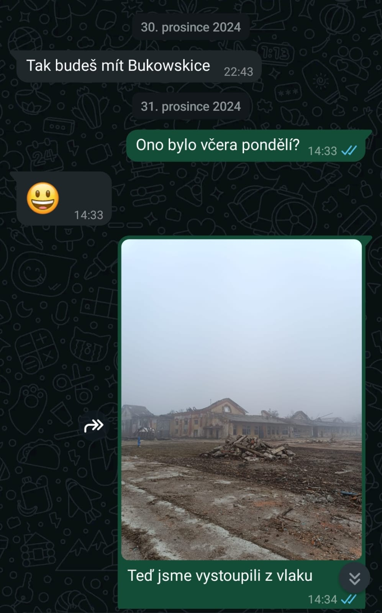
Už během roku hlásím, že turnaj pro mě začíná až se začátkem play-off, jen se do něj dostat. Během sezony se připojuje PeinSamaCZe
a já cítím, že bych mohl také ostrouhat a do finálové 12 se nedostat. Bébul mému tlaku odolával, a Tekele se držel dlouho daleko.
Zlepšený výkon v posledních týdnech mi dal luxusní pozici před závěrečným turnajem. Jen si to pohlídat.
Jo, pohlídat. Probouzím se ve vlaku v chorvatském Záhřebu, nemám vousy, bolí mě hlava, protože mi někdo pod hlavu dal dřevěné poleno,
o kterém ale nikdo z kupé nevěděl, kde se vzalo. Vystupuji ven, rozpadlé staré vlakové depo se halí do mlhy. Tu rozčísne jen zvídavý dotaz,
jestli jsme si jistí, že už tu skončila válka a já se podívám na telefon. Píše mi DJ - Střelec, že hraju play-off s Bukowskicem.
Vykulím oči a obratem píšu: "Ono bylo včera pondělí?". Moje strategie je v troskách jak okolní stavby, za chvíli u mne přistane domácí rakije
a já zvracím. Myslím, že tady v téhle chvíli oslovuji Vaška, že potřebuji pomoci s přípravou. Vašek Svoboda je někdejší mistr republiky do 16 let,
rád o sobě prohlašuje, že je nejlepším šachistou na světě, který nikdy doma neměl ani šachy, a můj výkon dokáže vždy posunout úplně jinam.
Chtěl jsem hrát nekorektní šachy, protože jsem věděl, že při přechodu do koncovek s Bukem ztrácím a většinou
mám i problémy s časem. Přemýšlel jsem, jak tohle zvrátit, a sbíral od svých kamarádů tipy na pofidérní zahájení.
Stáhl jsem si novou aplikaci - Chessis - fakt super a nahlížel do stromu zahájení.
Volba padla na Lotyše. Kdy jsem naposledy zahrál prvním tahem e5, to si ani nepamatuji, ale tohle vypadalo jako přesně to, co hledám.
Začalo moje soukromé pitvání. Postupně jsem vylučoval jiné varianty. Když jsem se dostal do fáze, že jsem věděl, co chci hrát,
vydal jsem se na oběd za Vaškem. Ten mi k tomu dal pár poznámek, k tomu jsme rozebrali nějaké miniaturky ze říše 2700 plus a naše
běžecké plány. Připraven.
Další čtyři hodiny si přehrávám Bukovy partie - jo, měl jsem volný den a venku bylo hnusně, skončil jsem v nové kavárně a nic mi nechybělo.
Šel jsem přesně v ten moment, abych si doma stihl dobít telefon. Nic jsem nechtěl podcenit. Zapálil jsem si vonnou svíčku,
hodil si uklidňující světlo a nechal adrenalin ve mně vřít.
Pár minut před celou přichází od Buka pozvánka k partii a já vím, že jsem od první ligy mládeže nebyl lépe připravený.
Mozek se roztočil do takových obrátek, že si toho moc nepamatuji. Ze zahájení vycházím opakovaně lépe. Jsem v pozicích,
které jsem celý den analyzoval místo jiných zábav. Bylo to pro mě takové šachové porno.
Při třetí partii se ale projevuje nervozita a také uvědomění, že mám nahráno.
Dělám chyby a ztrácím tlak. Na hodinách je pár sekund, a na všechno zapomenu a spáchám kamikazeeee útok,
protože jedno staré rčení říká, dej si šach, třeba to bude mat. Pro mě je to asi nejdůležitější strategická rada do blicek.
Ztrácím dámu. A je to v prdeli, říkám si. Zbývá mi jen ten šach. Pět, čtyři… sekundy odbíhají a mě najednou poleje světlo.
Ty vole, ten šach, to bude mat, jestli nejsem úplnej kretén. Jo, explicitně jsem si nadával.
Bouchnul jsem to tam a teprve začal počítat. Soupeř najednou zřel také tu tragédii a já měl čas dopočítat zbytek. Fakt tam byl. Buk ještě představil dvě figurky a já se musel soustředit, abych se nějak neuklikl a nespadl. 3-0. Samozřejmě teď jste začali psát na WhatsAPP a já neviděl přes upozornění na šachovnici. Myslel jsem si, že se hraje navíc do čtyř.
Další partie se kupí chyby. Jo, s tímhle bojuji i ve stolním tenisu, když vedu víc. Najednou je Buka plné hřiště, a i když po zahájení
hájím převahu, začínám chybovat. Tohle vážně ztratím, ptám se sám sebe. Naštěstí za stavu 3-2 se mi povede černého zatlačit a soupeř dělá
první větší hrubku a neprodlužuje to. Další hodinu pobíhám po bytě jako po postupu v Lize mistrů. Hrozný emoce.
Každopádně je nutný smeknout klobouček za Bukowskicovu sezonou. Play-off umí být krásné, ale zároveň kruté. Taková hokejová Sparta,
která už skoro 20 let nevyhrála titul, by o něm mohla vyprávět. Je to o jedné chybě, o štěstí. Nebýt tam ten mat, dost dobře by možná série skončila
opačně. Pak jsem prohrál asi pět následujících partiích v prvním turnaji. Emočně jsem byl úplně prázdný. Nešlo to. Zkoušel jsem různé techniky.
Pustit si hudbu, vypnout hudbu, kopat nohou do skříně, ale jako bych za tu hodinu křepčení zapomněl počítat.
Další zastávka Last Scout
Na první pohled to byl pro mě dobrý los. Ale v pondělním turnaji s ním prohrávám dvě partie dost dominantním způsobem.
Jsem pomalejší hráč a on nečitelný. Tady chci hrát naopak korektní šachy. Připravuji se jen letmo, abych prvních pár tahů neztrácel čas.
Věděl jsem, že to budou divočiny a bude záležet na chybách. Osmičkou jsem si splnil nějaký cíl, ale víte jak, s jídlem roste chuť.
Před partií mi vůbec nedochází, že by měl soupeř začínat. Moje chyba, na druhou stranu, bílými prohrávám dvě ze tří partií.
Já vlastně za ně ani nechtěl hrát, proto také jednou volím 1. a3, abych nechal iniciativu na Skautovi.
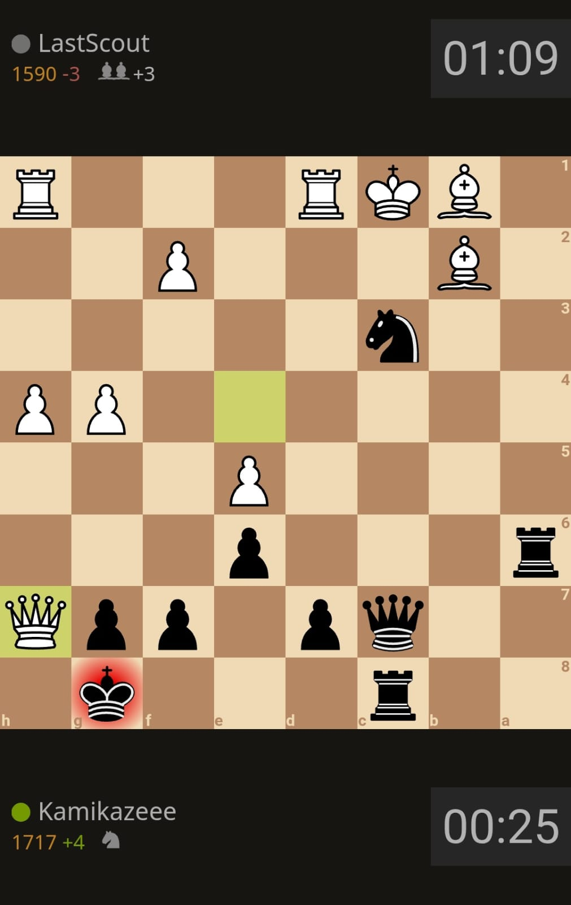
Úspěšně. V posledním duelu si myslím, že už mám vyhráno, ale úplně se mi dělá mlha před očima. Je to kousek. Jak to ještě vytunit, až najednou bum a já jsem na prohru. Tentokrát začnu vytahovat pastičky já a jedna z prvních mi vyjde. Joooo, je to tam.
Emoce tenkrát přicházejí se zpožděním, ptž se řeší, že jsem neměl začínat. Upřímně mě ty šachy se Skautem bavily a dal bych klidně odvetu.
Ale nakonec je jury rozhodnuto, že postup platí.
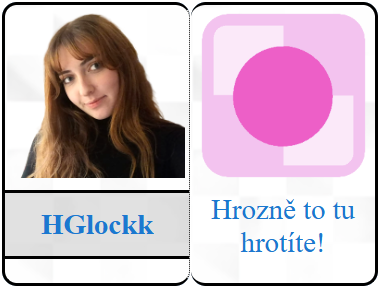
Tomr, konečná zastávka
Naopak na TomZr si věřím. Poslední tři blicky jsem s ním vyhrál, ze třech nebo čtyřech vážných partií ani jednou neprohrál.
Nicméně šachy hrají dva (ZRUŠME TO!). I Tom se na mě připravuje a nejhorší je, že já to tušil, že bude. Jenomže jsem byl linej a prošel si jen
jeho obvyklý repertoár. A konečně jsem si mohl zahlásit svou oblíbenou hlášku z mládí: "A tři hodiny přípravy jsou v prdeli!"
Nicméně prohrát 0:4 je ostuda. Minimálně poslední partií by bod slušel. Ale měl jsem za sebou pětihodinovou partii ve Slaným moje hra byla špatná.
Že jsem vypadl, o to mi ani nešlo, ale chtěl jsem pobavit diváky, dostat z Toma to nejlepší z jeho analytické dílny šachových obratů.
Místo toho jsem si připadal jako vánoční kapr před Vánocemi. A ještě v akci.
Moje cesta konečně skončila. Cítil jsem únavu. Byl jsem vlastně rád, že se nemusím připravovat na další sérii.
Čtvrté místo je s ohledem na sezónu uspokojující a další sezónu vyhlašuji útok na bednu.
Jen se dostat do toho play-off. -kam-
Lenochod na Šachovém turnaji v Brně
Kvůli práci jsem nestíhal příjezd do Prahy na Turnaj Století. A jelikož cesty Lenochoda jsou nevyzpytatelné, tak v mém,
od Prahy velmi vzdáleném Brně, jsem vyrazil na undergroundový šachový turnaj v čajové hospodě s názvem Hostimil…
Lákadlem bylo nejen možnost poměřit své síly s hospodskými šachovými povaleči, šachovými mistry a skrytými talenty,
ale také jistá disciplína tzv. Trash Talk, který byl při hrách povolen, dokonce byl nutností.
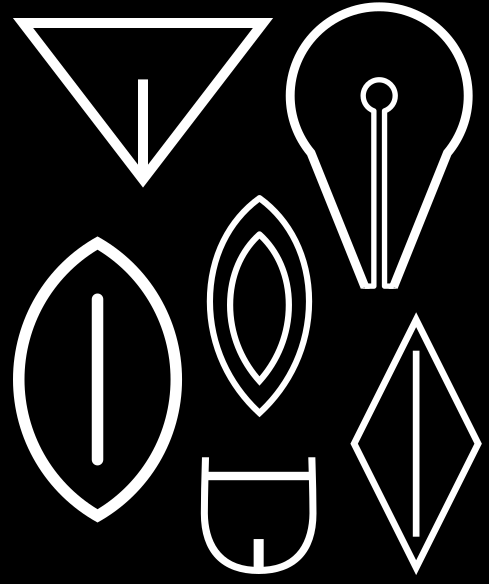
Už pozítří hrajeme v čajobar Hostimil!
Jubilejní pravidlo: na turnaji je povolený
- a podporovaný - tzv. trash talking,
tedy špičkování soupeřů, nebo taky "slovní válka".
Mimmo hlavní šachovou soutěž proběhne hlasování
o nejlepšího trash talkera.
Aby si všichni turnaj užili, prosíme o zachování
rozumné míry slušnosti, není cílem soupeře rozbrečet,
ale navzájem se pobavit a zpestřit hru.
Tady byly mobily, narozdíl od holešovického turnaje,
povinný na každom stole! Ty vole!
Hej! Ty s tou pleškou! Jen remcáš držkou a hovno umíš, co čumíš?
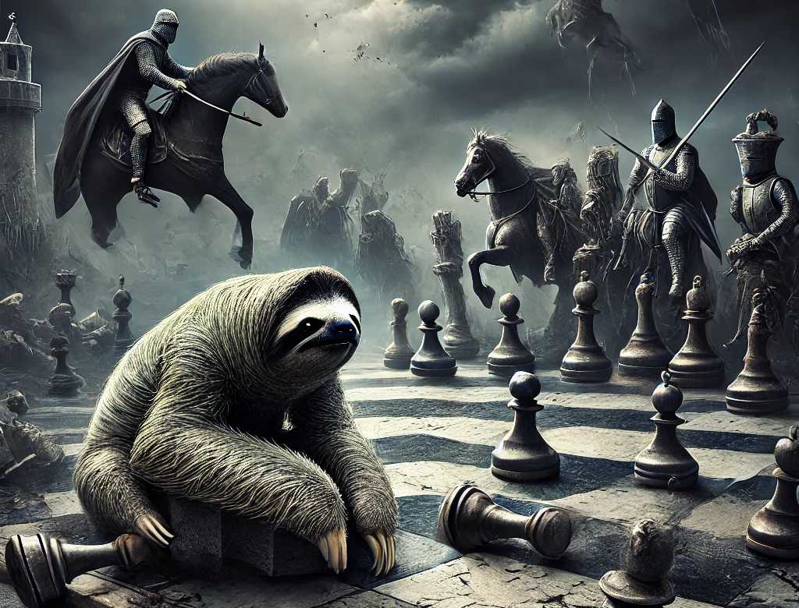
Při příchodu mě uvítaly sličné blondýnky, které měly na starosti registraci hráčů.
Oznámil jsem jim tedy svůj nick RychlýLenochod a hrdě dodal, že jsem z klubu MondayFights.
Hospoda byla plná jak podivných existencí, tak i pár hráčů v košilkách, ke kterým jsem ladil a zjistil,
že jsou to hráči s vysokými Elo. Po chvilce byla uzavřená registrace a sešlo
se 30 hráčů mužského pohlaví a dokonce i dvě ženy. Poté turnaj započal...
První hru jsem byl nasazen proti hráči se jménem Martin, který, když sem se ho zeptal na elo,
neváhal a hrdě mi oznámil že má 1970. Trošku mne to zarazilo, ale dali sme se do boje. Hráli sme Sicilskou.
Tu znám moc dobře. Po klidném zahájení, jsem se dost držel. Středová hra mi šla, dal jsem si záležet.
Nařkl jsem jeho mámu z nekalých praktik a udělal blunder. Klasicky sem udělal chybu a přišli sme oba o dámy.
Čas se začal zrychlovat a oba sme měli minutu na hodinách. Začal zmatek. Na obou stranách.
U okolnich stolů už měli dohráno a my byli poslední. Všichni se kolem nás zhloukli a ja se začal fakt potit.
Figurky padaly jako křižáci při božích taženích. Ani jeden z nás neměl dobrou pozici a čas utíkal.
Pot mi ztékal z čela jak při maratonu, snažil sem se nepokazit...
Nakonec sem v nervech prohrál o 8 vteřin na čas. O to víc mě to ale nakoplo na další hry.
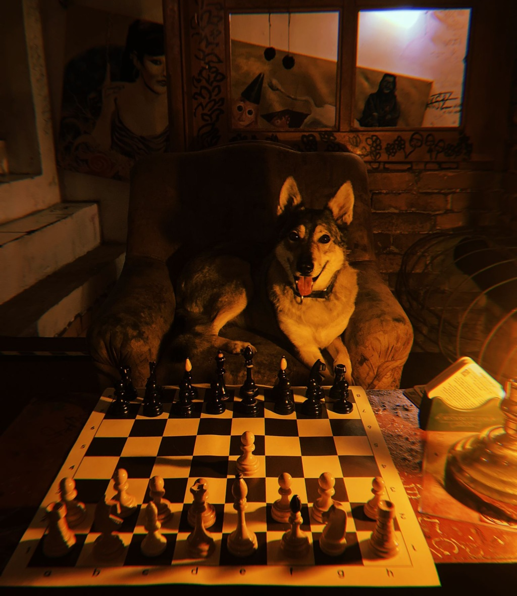
Hraješ pod psa, smetáku! Páníček je zhulenej, chudáku!
Přišla krátka pauza a první piva. Podnikem se linul kouř z marihuany a ze všech opadl stres.
Pak přišlo druhé kolo. Tam jsem dostal slabšího hráče a po 2 minutách ho vymatoval.
Bod pro mě! Konečně. Ne všichni jsou zvyklí na mé zákeřné blundery.
To stejné se pak stalo i u mé třetí hry, kdy jsem potrestal borce,
který se na mě snažil zahrát Queens Gambit. Po 4 minutách jsem získal druhý bod.
Takže jsem pak měl dost času si obhlídnout konkurenci. A že byla silná! Urážky na Matky a přítelkyně se rozjely. Od spousty stolů byl slyšet smích.
O zábavu bylo postaráno.
Po třetím kole bylo oznámeno, že dva hráči už nejsou způsobilí. Za což si mezi přítomnými vysloužili potlesk aspoň za účast.
Čtvrtou hru na mě čekalo klání s organizátorem celého turnaje. Což byla čest. Zkušený hráč s Elo přes 2000 mě vydrtil jak malého.
Neměl jsem absolutně šanci. Nevadí.
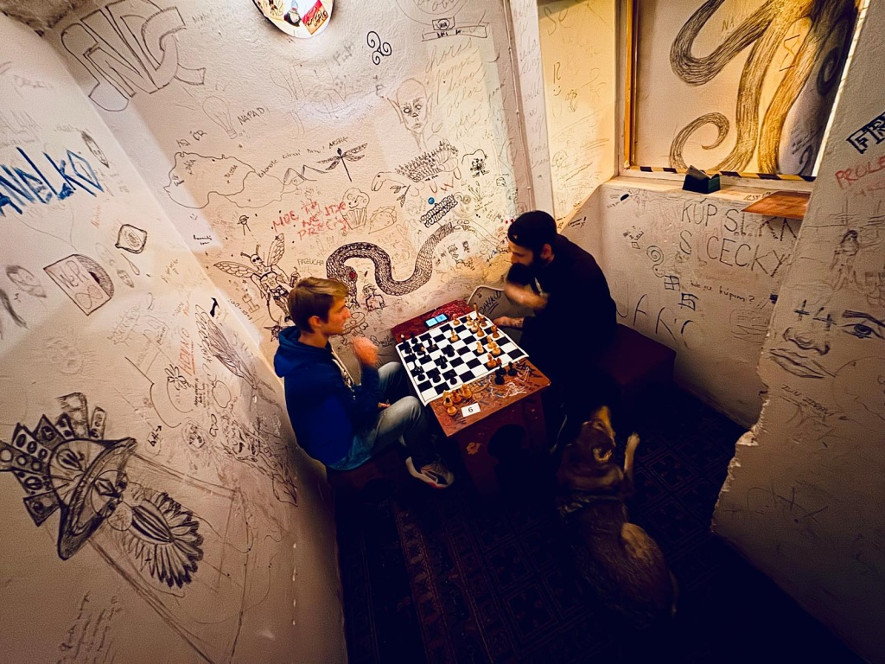
Máš toho plný kecky? Tak si kup cecky! Ale ty asi neumíš číst, co? Tak se votoč a přečti si to, negramote!
Pátá a šestá hra mi díky pár povedeným tahům vyšla mnohem lépe než sem čekal. V obou hrách jsem byl oproti protivníkovi napřed o jeden tah. Sílu času protivníci nezvládli a bylo vidět jak se trápí. Jednomu jsem dal mat a druhý to vzdal...
V tuhle chvíli mám 4 vítězství a dvě prohry.
Přede mnou poslední protivník. A k mému neštěstí to byl vítěz posledních dvou turnajů. Ať sem chtěl sebevíc, zahnal mého krále do rohu a zamatoval mě krásně s koněm...
Turnaj je tedy u konce. Skončil jsem na 11 místě z 32 hráčů, za což jsem na sebe docela pyšný a doufám, že jsem MondayFights udělal jméno i v Brně. Dostal jsem i pozvánku na další turnaj... Jenže pak se začalo slavit, hrát partie o panáky a piva...
a tady se mé zážitky začinají ztrácet v oblaku plné a zakouřené hospody... -lenochod-
Další holešovický maraton
V sobotu 30. listopadu
se v pražských Holešovicích konal další šachový turnaj v rapidu a blesku,
kterého se znovu zúčastnilo spoustu Monday Fighťáků, mezi které už nově patřím i já, Honza Kunc (kunc99)…
Jednalo se o dva turnaje, které byly oba hodnoceny na FIDE. Dopoledne se hrálo 9 kol rapidu tempem 11+0
a odpoledne se hrálo 11 kol blesku tempem 3+2. Oba turnaje spolu organizovali PeinSamaCZe a Jouzolean.
PeinSamaCZe byl zároveň rozhodčí obou turnajů.
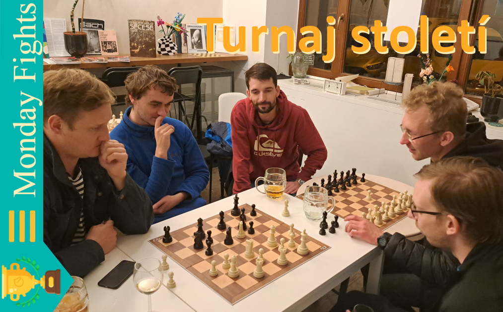
V šachové putyce po turnaji: po směru hodinových ručiček Last Scout, Pein Sama, Džouzoleán, Pajk, Tomzr
Šachové hodiny byly po obou stranách šachovnic, takže většina hráčů občas omylem práskla do hodin patřících k úplně jiné šachovnici.
Stejně jako minule byla na obou turnajích skvělá atmosféra. Navíc bylo pro všechny zúčastněné přichystané skvělé občerstvení,
z nějž lze vypíchnout například vynikající šatečky Báry Jouzoleánové.
V občerstvovací místnosti jsme také ve volných chvílích mezi koly sledovali právě probíhající zápas o titul mistra světa
mezi Dingem Lirenem a Gukeshem Dommaraju, který byl online přenášen přes projektor na zeď. Na to, že se hrála výměnná francouzská,
byla partie poměrně zajímavá a Ding měl dokonce černými jednu chvíli velkou výhodu. Gukesh ale zvládl partii remizovat.
Nyní ale pojďme k těm ještě prestižnějším šachovým událostem :-D
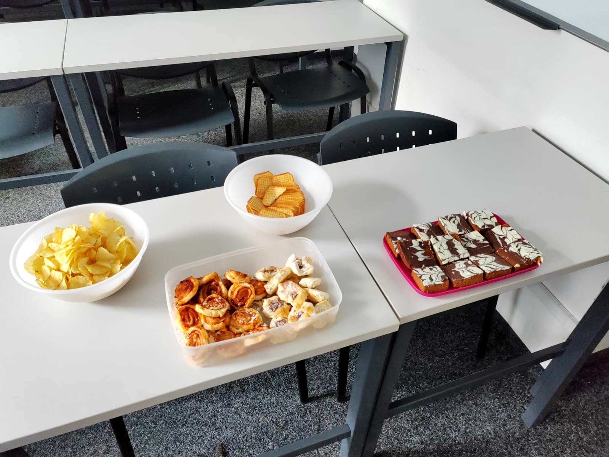
Čáry máry pod kočáry Báry Jouzoleánové
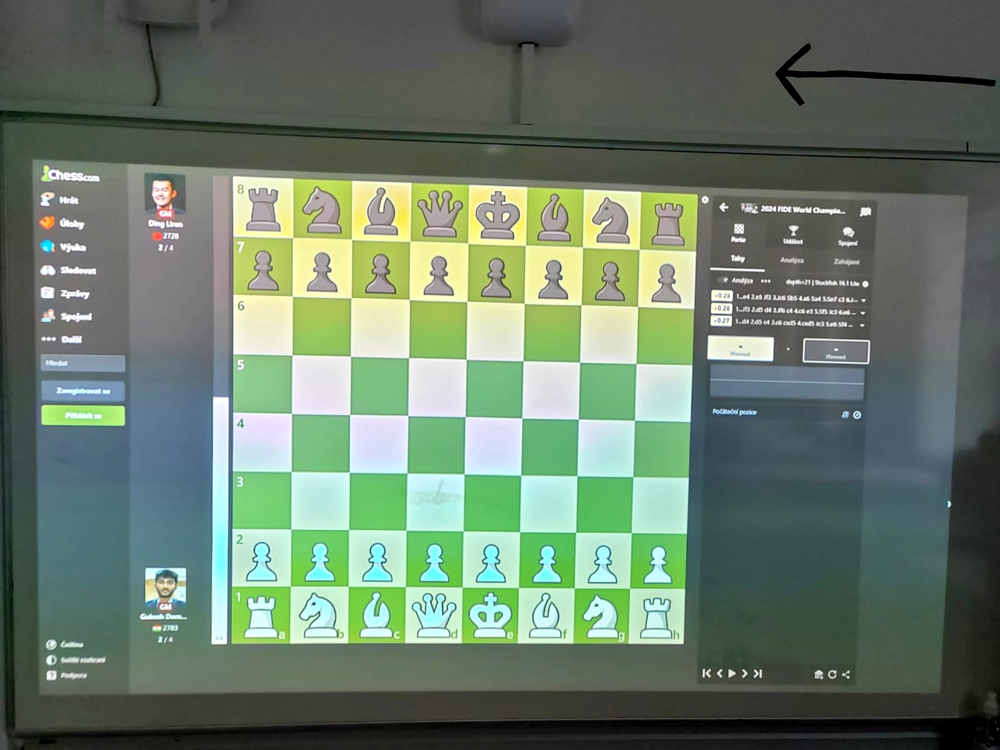
Ding Liren s tím možná dalším Mistrem světa
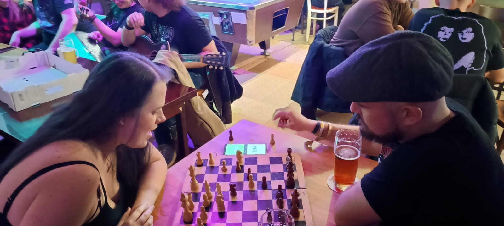
Celou noc před turnajem Kamikazeee mocně trénoval. Svou milovanou čapku nesundal ani v Holešovicích.
V dopoledním rapidu celkem s přehledem vyhrál Artur Shamian, s kterým sice konkrétně já mám z minulosti dobré skóre
(na posledních několika turnajích jsem ho porazil), ale ten den jsem s ním bílými pouze remizoval po tom, co mi dal
v těžkofigurové koncovce s pěšcem méně věčňák. Kolo poté jsem černými prohrál s tomzr, takže bylo jasné,
že musím přidat, abych měl šance na medaili. Až na velmi dramatickou a bojovnou remízu s Davidem Goliardem,
kde jsem málem spadl na čas, jsem zbytek partií vyhrál, ale stejně to na medaili nestačilo.
1. místo obsadil se 7,5 body z 9 Artur Shamian, který ve vyhrané koncovce s Michalem Kolbušovským prohrál na čas
a remizoval se mnou, jinak vše ostatní vyhrál. Na 2. místě se umístil také se 7,5 body z 9
(rozhodlo pomocné hodnocení ve formě vzájemné partie s Arturem) David Goliard a 3. místo obsadil se 7 body
z 9 Michal Kolbušovský, který prohrál s Davidem Goliardem a remizoval se mnou a s Monday Fighťákem Michaelem Chmielem.
4. jsem byl s 6,5 body z 9 já (kunc99), 5. byl PeinSamaCZe (5 bodů z 9) a dále se mezi pětibodovými umístili také
Monday Fighťáci Kamikazeee (7. místo z 22 hráčů), tomzr (8. místo), Jouzoleán (9. místo) a Dan Červenka,
což je myslím bukowskic (10. místo).
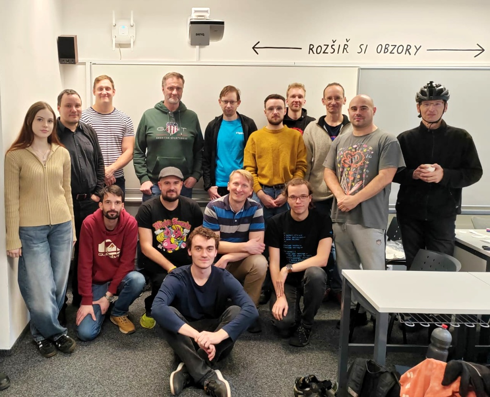
Zleva tu máme Melisu s tátou Robotronem, Last Scouta, Polgua, Tomzra, pak ve žlutom neznámý vetřelec, Pajk, Mozkomor, Michael Chmiel, a náš Bébulek v helmě.
Pod Melisku se postupně skáceli slovutný Jouzoleán, Kamikazeee, Bukowskic, vetřelec č.2 a v tureckém sedu Pein Sama
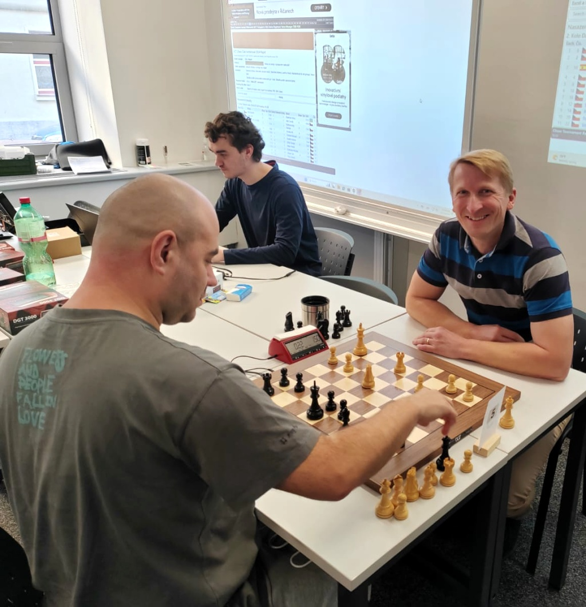
Bukowskic se směje, asi vyhrál
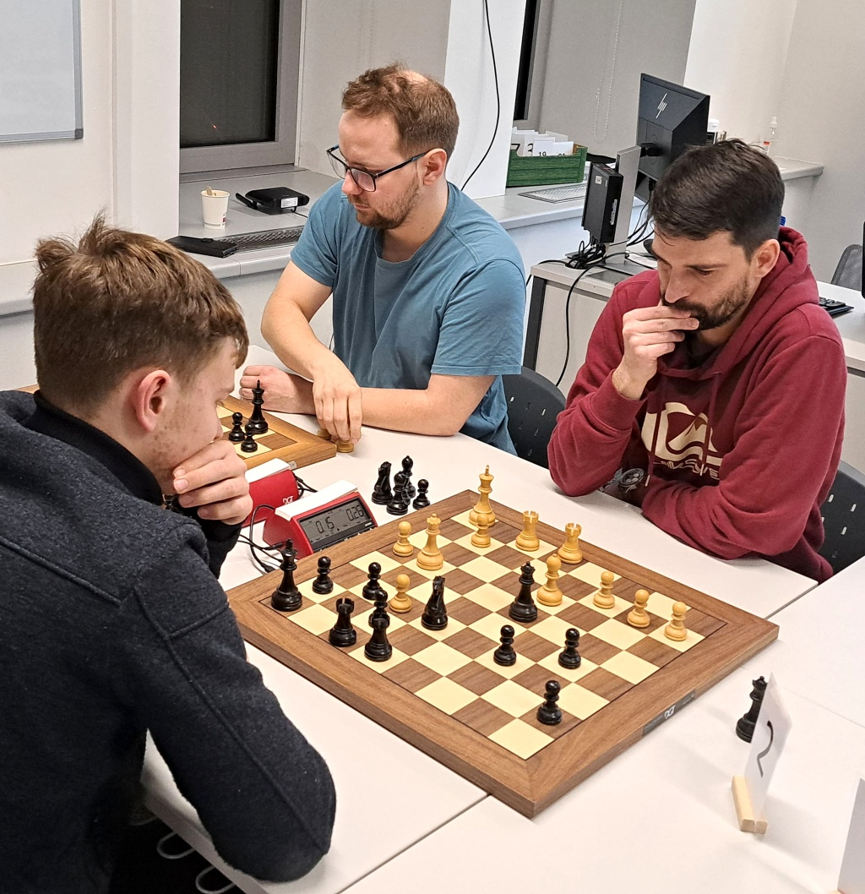
Jouzolean zírá na svého předsunutého pěcha
Před blitzákem proběhla tentokrát výrazně kratší pauza na oběd, kdy jsme tentokrát místo pizzerie zvolili kebab.
Namotivovaný z bramborové nemedaile z rapidu jsem se s heslem „jen kebab v žaludku má a medaili jasnou má“
pustil do odpolední blitz části. Té se už neúčastnil Artur Shamian, takže konkurence byla mírně slabší, ale pořád to bylo
velmi zajímavé a rozhodně ne jednoduché. Už 3. kolo bylo poměrně klíčové, protože proti sobě na 1. šachovnici nastoupili
medailisté z dopoledne Michal Kolbušovský a David Goliard (David vyhrál černými díky taktickému blunderu ze strany Michala).
To kolo se obecně nějak dost dařilo černým – já jsem vyhrál černými s tomzr, Dan Červenka porazil černými Kamikazeee a PeinSamaCZe
černými zdolal jednoho Synka ze Slovenska (velké S není překlep, protože se jmenuje Jaroslav Synek). Po 8. kole
(tedy pouhá 3 kola před koncem turnaje a tím i celého maratonu) jsme byli ve vedení David Goliard (7,5/8), Michal Kolbušovský (7/8)
a já čili kunc99 (6,5/8). Na záda nám funěl tomzr s 5 body z 8, ale vzájemné partie jsme už měli všichni za sebou,
takže jsme před sebou každý měli už jen partie s hráči s menším počtem bodů. V posledních kolech už na předních stolech
k žádnému překvapení nedošlo, všichni lídři jsme v posledních třech kolech udělali 3/3 a tak se pořadí
1. David Goliard, 2. Michal Kolbušovský a 3. já (kunc99) nezměnilo.
Páté a šesté místo obsadili organizátoři a Monday Fighťáci PeinSamaCZe a Jouzoleán.
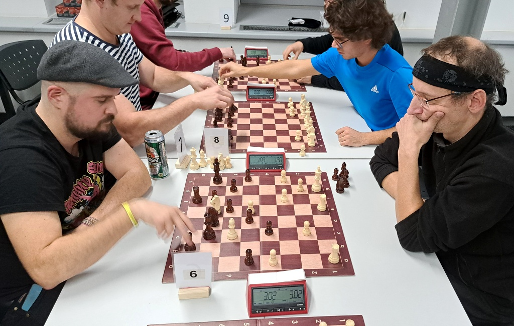
Bébulek poráží Kamikazeeeho. Teda vlastně ne, protože až druhej nemožnej tah prohrával!
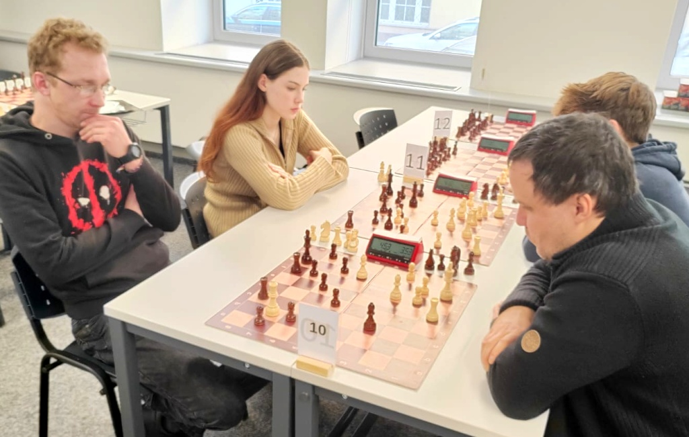
Figurky na Robotronově šachovnici působí trochu random dojmem, s vyprázdněným dámským křídlem
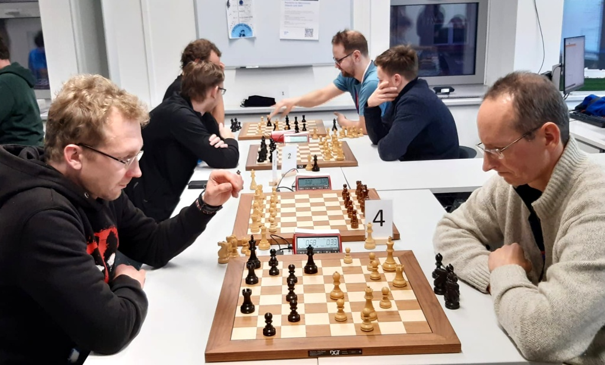
Pajk ublitzán Mozkomorem
Bukowskic s Tomzrem maj hnědý černý
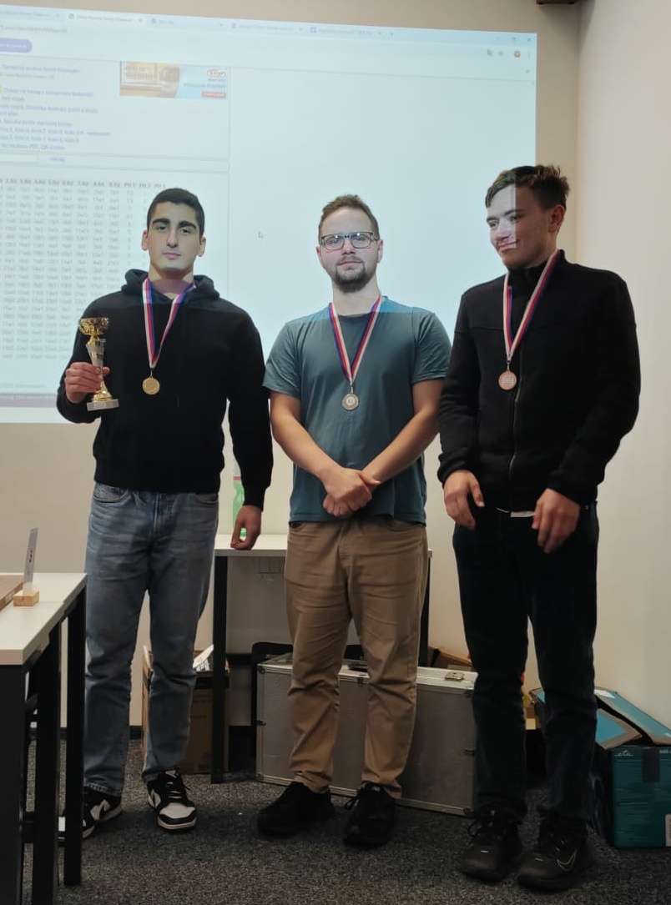
Vítězové rapidu: Artur Shamian, David Goliard, Michal Kolbusovský
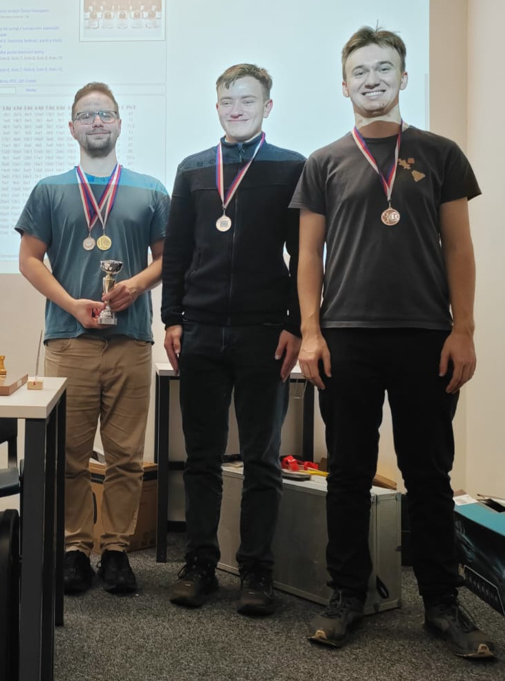
Vítězové blitzu: David Goliard, Michal Kolbusovský, Jan Kunc
Byl to moc fajn šachový den, takže díky všem, co přišli, díky organizátorům a taky díky za to, že jsem byl hned po
tomto maratonu pozván mezi Monday Fighťáky, s kterými jsem si hned 2 dny po turnaji zablitzal v jejich
(teda teď už naší) aréně na lichessu. Snad se na příštím maratonu opět sejdeme v hojném počtu.
-kunc-
Turnaj Století
Turnaj století, který pro nás, Monday Fighťáky, zorganizoval PeinSamaCZe, se odehrál tuto neděli v pražských Holešovicích...
Dne 4.8.2024 se uskutečnil konečně náš první reál turnaj v šachu,který byl zároveň FIDE hodnocený.
Turnaje se zúčastnilo 11 hráčů Monday fights, také několik hráčů z okolí PeinSamaCZe včetně jednoho náhodně
zúčastněného poláka. Turnaj byl silně nabušený hvězdami. Vedle našeho Tomzra, Dj. Střelce, Bukowskice byli
na startovní listině také dva hráči s ratingem přes 2100 FIDE elo.
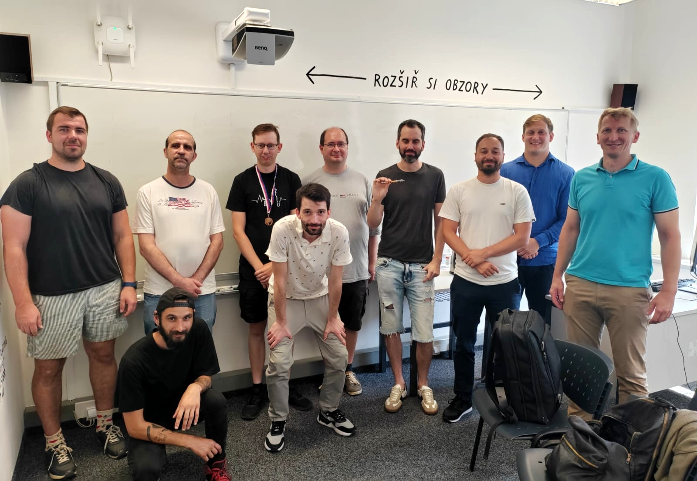
Zleva: HonzaHonza, Lenochod, Baron Gorc, tomzr, Jouzolean, Mrazek, DJ-Pesec, Tekele, Scout a Bukowskic. Nevešli se PeinSamaCZe a Tomas_1989 s mimčem.
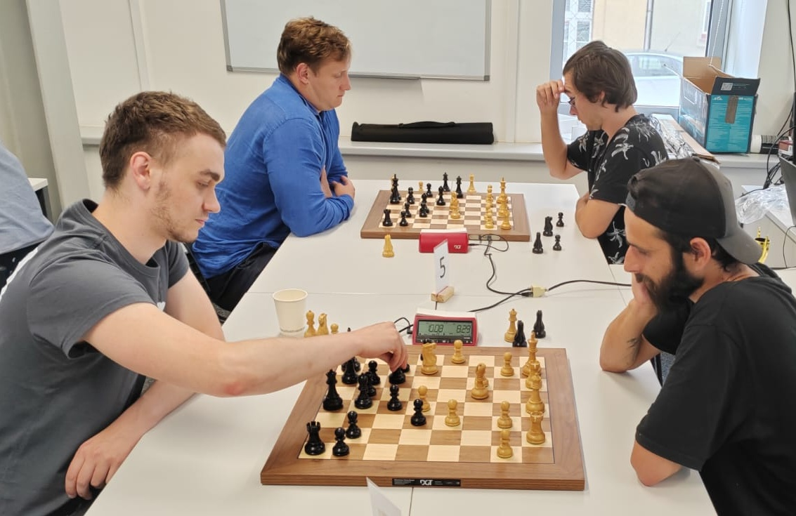
Hrající rozhodční PeinSamaCZe proti Lenochodovi. Vzádu LastScaut.
Turnaj nebyl vůbec komorní, už od začátku panovala skvělá nálada a z hráčů bylo cítit nadšení a zároveň
nervozita ze vzájemné rivality. PeinSamaCZe instaloval elektronické boardy, které byly skvělé - zaznamenávaly
hry vyvolených na internet.
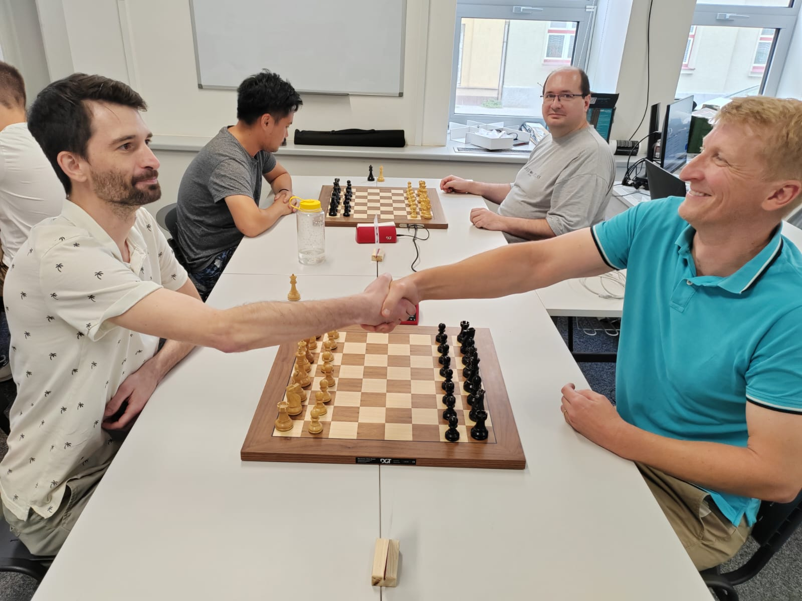
Jouzoleán proti Bukowskicovi
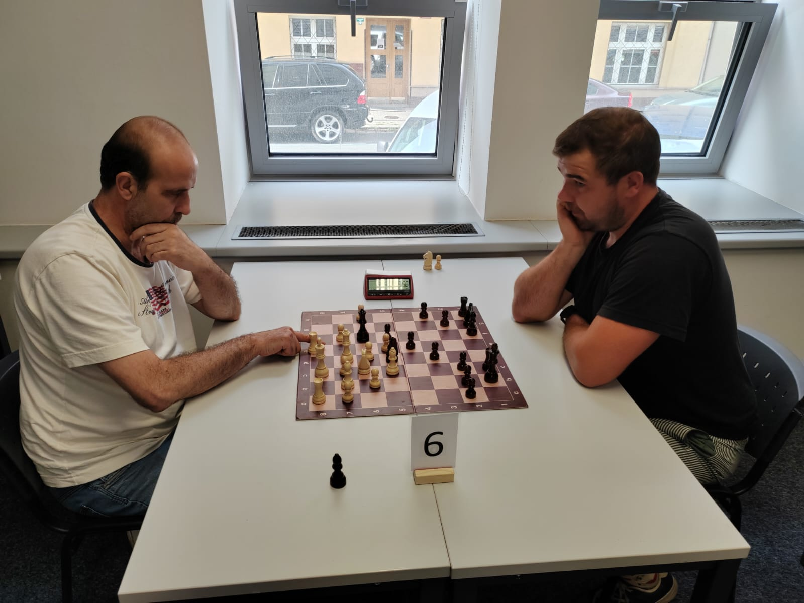
Baron Gorc s HonzaHonzaHonza
Bukowskic si užíval toho, co napekla Jouzova drahá polovička a rozdával úsměvy všem zúčastněným. Tomzr s ledově klidným výrazem pochodoval po místnosti
s myšlenkami na první oběť, Tekele čerstvě vstřebával realitu po návratu z dovolené, Rychlý Lenochod měl zase zpoždění.
V zákulisí se nesly informace o tom, že ho chtějí až 3 rivalové zmlátit.
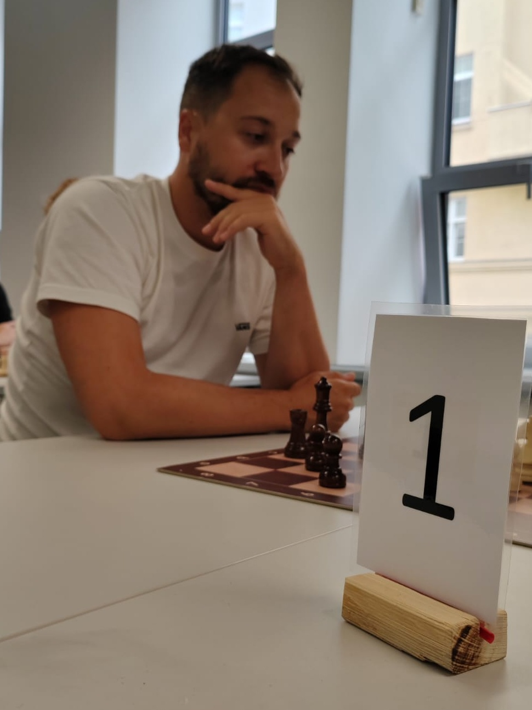
Tekele v hlubokém zadumání
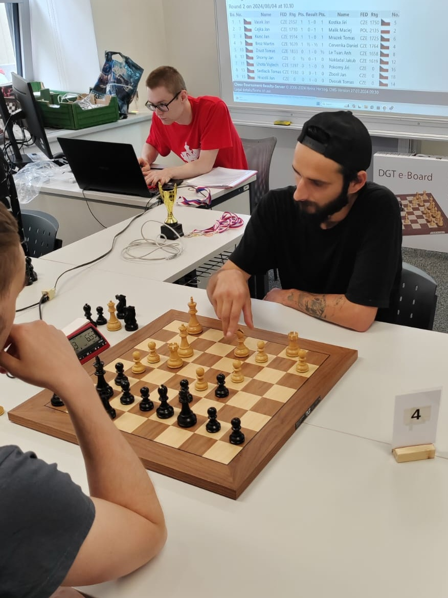
Rychly Lenochod v dobrém rozmaru
Dj-Pěšec seděl zadumaně na stoličce a přemýšlel, co bude hrát proti Jouzoleanovi - e4 nebo d4? Po zahájení jejich hry však stále nevěděl. Mrázek v očekávání přišel pozlobit svého švagra a široké okolí, ale především aby si turnaj užil. Povinnosti totiž volají a kdo ví, kdy přijde příště. Last Scout tvrdil Kristýnce, že přijde hned po turnaji domů - lhal.
HonzaHonzaHonza přijel až z Liberce a jako bonus se na nás přišel podívat jeho bratranec Tomáš_1989 i s jeho prvorozeným synem. Bojovník Baron Gorc nezklamal a přišel také v očekávání, že uhraje alespoň cenný bod.
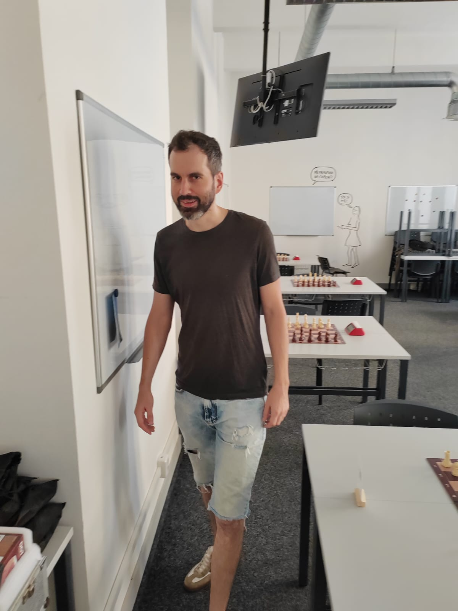
DJ-Pesec v rozstřílenejch gatích
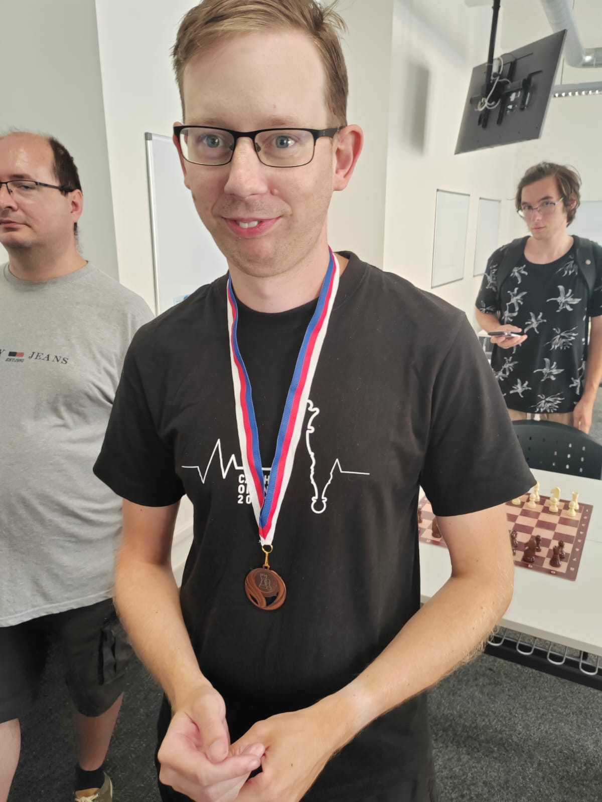
Tomzr byl na bedně hned dvakrát!
Turnaj začal dopoledním blitzem 3+2 o 11ti kolech, pak jsme dali oběd a pivo v nedaleké italské restauraci, následně jsme se přesunuli s lehkým zpožděním k odpoledním rapidu 11+0 o 9ti kolech. Turnaj celkem svižně odsýpal a cca v 18 hodin jsme byli u jeho konce. Následně se ti nejodvážnější z nás přesunuli do místní knajpy na pivo. Rychlý lenochod tam čelil bezprostřednímu útoku na jeho tkaničky od bot. O tom vám ale bude povídat až příště.
Byl to skvělý den. Děkuji všem co přišli a zároveň doufám, že turnaj nebyl poslední.
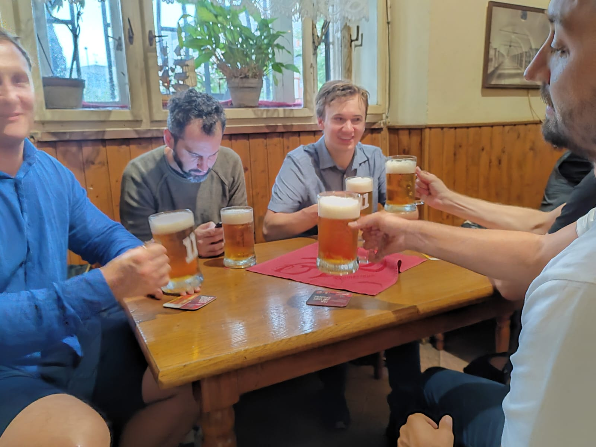
Gratuluji úspěšným 🙂 a PeinSamaCZe veliké díky! -jouz-
Pozor, hlášení místního rozhlasu!
Pozn: závěrečné ohlédnutí za sezónou MF 2022 napsal slovutný Jouzoleán už v prosinci. Zveřejňujeme pouze s měsíčním zpožděním... -beb-
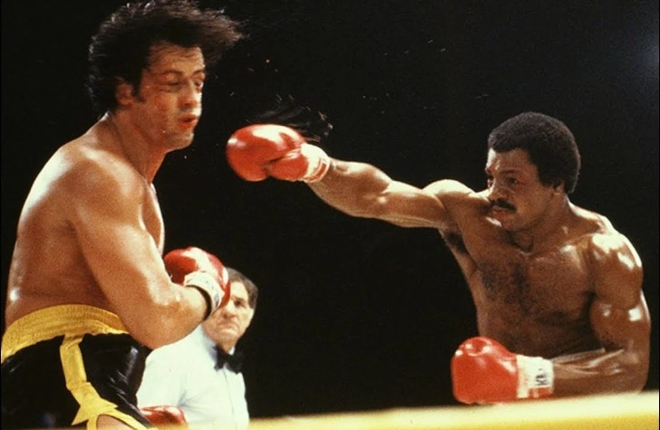
Redakci se podařilo dostat hlasový záznam z turnajových klání mezi Jouzoleánem a Tekelem.
Konec sezóny vyvrcholil a mým zvykem bývá napsat něco o proběhlém roce. Pro všechny z nás to byl rok různý, buď hektický plný zvratů anebo nudnej, tak jako ten předešlý.
Přesto byl jeden okamžik v týdnu, kdy jsme na celý ten shon či neshon zapomněli a věnovali se zcela smysluplné činnosti, která rozvíjí náš přirozený talent,
paměť a přináší nám a našim drahým polovičkám takovou radost. A někdy i vztek.
Bylo to pondělí, dvacet hodin, to zvoníval náš čas a odzníval pak jednadvacet třicet, jako by lusknutím prstu byla předurčena nálada na další týden.
Někdo si to neodpustil ani jednou, nikdy nevynechali - jsou to kluci srdcaři, hrdlořezové a koryfejové turnaje, jistě si zaslouží svoji těžce vydřenou plaketku.
Jsou to hráči Jouzolean, Mrázek, HonzaHonzaHonza a Last Scout. Nesmíme zapomenout taky na Rychlého Lenochoda, který přišel o plaketku pouze z důvodu nemoci.
Děkujeme všem těmto držákům.
Rozdíly mezi hráči se postupně nadále zmenšují, všichni aktivní hráči vykazují jednoznačné známky zlepšení herního stylu. Velmi pozvolna přijímáme nové hráče, avšak s dobrou rozvahou.
Letos se turnaje zúčastnilo 35 hráčů, z toho sedm nováčků a jeden GM Robert Cvek, který přislíbil účast i v roce 2024.
Přesně po dalších 3204 MF hrách, tak jako každý rok, vyhlašuji slavnostně výsledky.
1. Jouzoleán 366,5b.
Již podruhé v řadě ovládl Monday fight a to ještě s větším náskokem než loni. Však taky celou dobu bojoval o pokoření rekordu Bukowskice z roku 2021 (371 bodů), což se mu jen o vlas nepodařilo. Radost z vítězství mu to však nepokazilo. Zasloužil si ho opět výbornou, 100% účastí a přípravou proti jednotlivým hráčům, herní styl přitom tento rok výrazně neměnil. Protihráče děsil italskou a sicilskou hrou, občas se vyžíval v gambitech, které nejdou ani vyslovit. V dalším roce mu i ostatním přibyde výrazná konkurence, tak uvidíme, jak se mu povede nadále. Každopádně má strach, v tabulce posledních deseti turnajů je momentálně až pátý a všichni jsou tak dobří😯.
2. Mrázek 339b.
Také opět uhájil druhou pozici. Výrazně se bodově vyšvihnul, měl 100% účast. Je to dříč, maká na sobě (z doslechu nově i v posilce). Tento rok si našel novou přítelkyni - nejdříve jeho výkonnostní křivka začala prudce klesat, pak ale jako zázrakem, pomalu a pozvolna začala zase stoupat, až poslední měsíc hraje zase jako Bůh, až to vyvolává pocity a naděje, že by snad příští rok mohl zabojovat rovnou o zlato?😯 Začal hrát nějeký prapodivnosti. Nikdo neví, co to znamená. Jestli rezignoval na main lines, nebo jestli je v tom taktika, uvidíme až v další sezóně. Každopádně už vznikají studie na vymýcení těchto jeho rozmarů a Mrázek se bude potit čím dál tím víc!🤫
3. Bukowskic 295,5b.
Další hráč, který uhájil pozici z minulého roku. Stačilo mu k tomu ještě méně bodů a her než loni. Avšak absence nebyla zcela zdarma, několikrát na něj cenil zuby náš Hans a hrozil jasně: Buki, jestli nepřijdeš i na Vánoce, budeš čtvrtej! Buki je ale srdcař a přišel. Moc se těšíme na jeho nové vydání knihy Můj systém od A. Nimcoviče, na kterém stále pracuje. Ještě víc se těšíme, až příští rok spadne do dalších nastraženych pastí ušitých mu na míru, nebo do těch starých - to máme nejradši😁. Kvalita jeho hry je však nepopíratelná - jistě má velkou šanci uspět v závěrečném pavouku. Minulý rok prohrál ve finále s Dj. Pěšcem těsně 3,5:2,5.
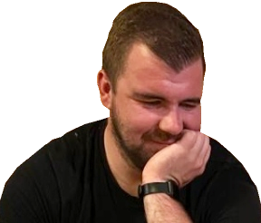
4. HonzaHonzaHonza, 289,5b.
Jeden z letošních nováčků, z něhož máme obzvláště radost, protože měl také 100% účast! V kombinaci s jeho dobrým herním výkonem dosáhl skvělého výsledku. Nejdříve začínal za černé Caro-Kannem, ale rychle zjistil že ho dusíme, tak přešel na Francii a teď čekáme, kdy uteče k něčemu jinému. Ale nějak se tam drží jako klíště, proto do něj bušíme teorii co to dá - ať se učí, mladéj! Za bílé tvrdě brázdí vody dámského gambitu, čemuž se nedá nic vytknout, samozřejmě! Jen tak dále, třeba to další sezónu cinkne. Ostatně, co tomu chybělo už letos 😯.
5. RychlyLenochod, 201,5b.
Neustále přejíždím očima tabulku a nemůžu uvěřit, že je pátej. A s tak velkým počtem bodů - neuvěřitelné. Jeho dosud nejlepší výsledek, zaslouží velké ovace. Dokonce získal plaketku za nejvyšší počet nejrychlejších matů - konkrétně 12 - nikdo se mu ani nepřiblížil, na druhém místě byl Bebul s šesti nejrychlejšímy maty. Navíc přidal zisk 15ti nejrychlejších her, což bylo také nejvíce. Tak jako minulý rok mu zkomplikovala účast cesta do Francie, kde nakonec onemocněl. Přesto se při náročné léčbě začíná pozvolna vracet k MF, už zase zve hráče na berserk. Z letošního závěrečného pavouka však odstupuje kvůli rekonvalescenci. V nové sezóně se určitě těší, až nám to napálí lehkou, nebo klidně těžkou figurou do krytého pěšce před králem😯. Opravdu horký kůň turnaje.
6. Mozkomor, 186b.
Letos prožil mírný pokles aktivity, přesto uhájil solidní, čestnou pozici. Hráč, který je velmi úderný, hrající rád ostré pozice, s nímž málo kdo chce přijít do křížku. Ruská hra a kings gambit - "nic jiného bych nehrál, to je nuda..." Každej to ví, ale přesto mu to ještě za celé ty roky nikdo plnohodnotně nevyvrátil, nebo jo? 😯Letos se neúčastní závěrečného pavouka.
7. Margarita_Vlasenko, 182b.
Naše mladá Rita již plnohodnotně zapadla mezi nás a získala si respekt mnoha hráčů. Pilně trénuje pod taktovkou nového trenéra, z čehož je ne každý nadšen. Hraje to dobře, holka naše. Těším se na první sezónu, kterou vyhraje. Určitě se to jednou stane.
8. MichaelChmiel, 166b.
Další z kvalitních nováčků tohoto roku. Vždy solidně hrající, obávaný soupeř typický tím, že mění zahájení a je mu tak trochu jedno, které hraje. Jsem zvědav, zda-li to v další sezóně trochu více ustálí. Kdyby i uhrál více her, mohl by hravě bojovat o nejpřednější místa v tabulce.
9. Tekele, 159.5b.
Měl jen o trochu méně bodů než loni a hned o dvě příčky zklesal jinoch, jenž zplakal nad výdělkem. Poslední šance vkládá do závěrečného pavouka, kde se hned v první kole utká s Tomzrem.
10. Tomzr, 158b.
Další nováček, mrázkův Švagr, který do MF naskočil až v půlce srpna. Od té doby však téměř nevynechal, několikrát vyhrál plaketku 100% vítězství, předváděl nadprůměrné výkony a stihl se tak vyšplhat až na desáté místo v tabulce. Je to velký kandidát na vítězství v závěrečném pavouku i v další sezóně.
11. Bebul, 138b.
Náš nejvyšší admin letos v pondělí v čase turnaje vede dětské lezecké kroužky. Je to jeho vášeň a tak si neumí pomoci. Na MF přijde jen občas ale o to víc se tam vyřádí. Stejně jako jeho bratr Mozkomor hraje nejraději Kings gambit, svědčí to o jeho charakteru - uderný muž s romantickým srdcem 😯. Taktéž přenechá své čestné místo v závěrečnému pavouku hráči umístěnému níže.
12. Last Scout, 137,5b.
Jakožto poslední postupující z našich jungen boys si zaslouží velký respect. Jeho účast byla 100%, odehrál rekordních 591 her, začínal z úplné nuly a vypracoval se na obstojného hráče. Při současném tempu pokroku se máme brzy na co těšit. Už teď se stává, že plaketku za senzaci turnaje získává pravidelně právě tento hráč - tento rok 25 krát - nejvíce.
Na 13. místě se umístil výborně hrající nováček Tomáš_1989 (bratranec Hanse) a na 14. místě Dj. Pěšec, kterého už všichni dobře moc známe😎. Tito hráči postupují do závěrečného pavouka místo hráče Mozkomor a Bebul, kteří odstoupili.
Všem gratuluji a přeji hodně úspěchů v další sezóně, krásné prožití zbytků Vánočních svátků a vše nejlepší v Novém roce 2024,
Za tým MF sepsal -jouz-
DJ-Strelec čaruje za Viktorii Žižkov
DJ-Strelec: Musím se vám pochlubit. Hrál jsem vážnou partii za Viktorii Žižkov, kde letos hostuju, a udělal nejkrásnější kombinaci ve svém životě!
Počítal jsem to asi 10 minut a nakonec do toho celý vyděšený, že jsem něco přehlédl, šel. Jxd5 a oběť dámy! -DJ‑Pesec-
Mraky nových šachovnic
Bébulka už nudilo pořád koukat na stejné šachovnice na našem WEBu, tak přidal pár nových, včetně figurek.
A když už je máme, bude se pro každý rok, PlayOFF a turnaje s GM Robertem Cvekem, používat vždy jeden hlavní set takto:
Krom toho je nyní možné zobrazit libovolnou turnajovou partii tak, že v turnajové tabulce
kliknete na hráče a v zobrazeném seznamu jeho her zalevitujete myší nad výsledkem.
Případně na mobilu na výsledek kliknete a jak se Vás to zeptá, jestli chcete přes browser nebo Lichess APP,
tak řeknete, že nechcete ani jedno a voilá, šachovnice je na světě.
Ukázka všech partií vítězného Tomzra v PlayOFF 2023. Gratulujeme! Nově též barevně odlišeny vyhrané a prohrané partie. Video ukazuje prvotní nástřel, který nejspíš dozná změn.
Protože mám rád gambity, bude pro gambity volena hezčí, úderná, přehledná, nádherná šachovnice.
Ale cha chááá, když hrajete za černého a v názvu bude defense, zobrazí se taková šedá novinářská nuda.
Ale i to má výjimky, Sicilka, nějaké gambity černého typu Lotyšák, Rousseau, ... Za bílého taky
Italka, Skotská, Anglická, Španělská atakdále. Budu to rozšiřovat, kdyžtak mě bombardujte požadavky.
-beb-
Jouzoleán na hrad!
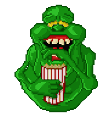
Pozn: závěrečné ohlédnutí za sezónou MF 2022 napsal slovutný Jouzoleán už v prosinci. Tou dobou se blížily prezidentské volby... Webmaster s překlopením na tyto stránky zaspal, tak ten titulek teď vypadá jako obsolentní, ale kdo by Jouzoleána na Hradě nechtěl?
Hrál se též turnaj šampionů, o kterém je více pojednáno v archivu 2022. -beb-
A je to tu! Zase po roce můžu pronést - a je dobojováno! A že to letos bylo ale drama. Již třetího ročníku našeho oblíbeného Monday Fights
se zúčastnilo rekordních 31 playerů, z toho 12 nováčků, kteří svedli houževnatou bitvu o šachový trůn. Naše webové stránky jsou zásluhou
našeho Bébulka v rozpuku - přibylo tam strašně moc nových věcí - parádní fotky hráčů i speciální helloweenské karikatury,
aktuální pavouk po každém turnaji, automatizace celého systému, rozšíření criss cross tabulky atd atd.
Pro velkou časovou náročnost bohužel nestihl dokončit vše podle plánu, například již dlouho slibovanou Síň slávy,
kde má být vystaven součet všech získaných plaketek a jednotlivé úspěchy hráčů, ale aspoň se na to všechno mužeme těšit třeba v roce následujícím. Chtěl bych mu za tu jeho práci moc poděkovat, protože to dělá na úkor jeho vlastní rodiny a nedá se to považovat za samozřejmost, stojí za tím spoustu práce a sebeobětování. Bebule, velké díky.
Letos se nám podařilo do našich řad nalákat velmistra Roberta Cveka, který dokonce přislíbil, že se zúčastní každý rok.
A v hledáčku máme i dalšího známého šachistu - jeho jméno zatím nechci prozradit. Doufám, že to klapne a letos budem hrát hned s dvěma velmistry.
Jsme opět rádi, že jsme se sešli každé pondělí v roce a turnaj stále žije, ba dokonce rozkvétá. Doufáme přitom, že nám to vydrží co nejdéle 🙂.
Už zanedlouho zde vyhlásíme instrukce k letošnímu pavouku - turnaji šampionů 2022 a taky přidáme nové grafické znázornění našeho Family tree,
protože jsme se docela rozrostli - k nahlédnutí na webu v sekci Players.
Jakékoliv nápady, připomínky, nebo třeba články do sekce Hot news jsou vítány. Za ty je mimochodem stále přislíbena plaketka Reportéra 🙂.
A nyní k tradičnímu vyhlášení výsledků
1. Jouzoleán
Ano, je to tak. Asi největší překvapení tohoto roku. Nikdo by tomu ještě pred měsícem nevěřil, protože Bukowskicovy výkony byly ták jednoznačné.
On to ale dokázal, vděčí za to nejen mírnému pokroku v jeho hře, ale hlavně díky aktivitě - hrál i když se mu nechtělo,
i když byl zrovna v práci, i když byl nemocný, i když mu bratři mozkomorové vyhrožovali krutou přípravou a pastmi záludně nastraženými. Se ziskem 331 bodů (minulý rok 324,5 b.) sesadil mocného Bukowskice z trůnu a už se těší na obhajobu titulu v příštím roce.
2. Mrázek
Hráč, který zahrál ze všech nejvíce turnajů, nejvíce her, nasbíral 321 bodů (min. rok to bylo 264 bodů a tak se letos výrazně posunul). Taktéž dokázal udržet slovutného Bukowskice za svými zády a byl tak po zásluze odměněn stříbrem. Opět musím zmínit jeho výrazné zlepšení a hlavně zrychlení hry oproti minulému roku. Tento rok opustil ŠK Smíchov, dal se na dráhu individuální kariéry a účastní se těch nejprestižnějších turnajů v ČR. Navíc zjistil, že Jouzolean je jeho soused a tak s ním začal trénovat kombinace, z kterých se Vám v příští sezóně zatočí hlava. Následující rok už bude jasně bojovat o šampiona MF.
3. Bukowskic
Hráč s největšími šachovými dovednostmi v MF kupodivu zůstal až na 3. pozici se ziskem 313,5 bodů. Minulý rok nahrál 373 b., což mimochodem stále zůstává dosavadním rekordem. Osudným se mu stala velká neúčast hlavně v posledním měsíci v roce, kdy ho předběhl na šanci čekající Jouzoleán a nakonec i maestro Mrázek. Tento rok se chopil vedení Dobříšského šachového klubu, kde jsou na něj mimojiné vyvíjeny nátlaky na zlepšení jeho hry. Uvidíme tedy, jaké plody mu to přinese - očekáváme, že vystřelí někam do šachového vesmíru. Nyní má Mr. Bukowskic poslední šanci zachránit si čest a zvítězit v turnaji šampionů. Přejeme dvojnásobnému šampionovi hodně štěstí a sil nejen v pavouku, ale i do další sezóny.
4. Mozkomor
Cca 3/4 sezóny byl pátý, pak přidal na aktivitě a dohnal své dvojče Bébula. Nasbíral 264,5 bodů (min. r. to bylo pouze 190 bodů) a stále patří mezi nejlepší hráče MF, kterému se chcete v pavouku rozhodně vyhnout. Snad nikdy nehrál za bilé nic jiného než královský gambit - neznám člověka, kdo by mu rozuměl více - v pár variantách podává výkony i přes 2500 elo, proto je tak obtížné ho porazit. Postupně mýtí jednu odbočku za druhou, trpělivě trénuje a už jen vyhlíží elo 2000. Že by mu to příští sezónu konečně cinklo? Rozhodně si to zaslouží.
5. Bébul
Náš horkokrevný kůň turnaje nasbíral tento rok 219 bodů, i tak to nestačilo na mozkomora. Minulý rok nasbíral 209 bodů, takže jde o dalšího hráče, který se posunul vpřed. Pro ty, kdo to ještě neví, je Bebul Mistr přípravy. Začal hrát z nuly proti 1.e4 odpověď... e5! Postupně vyvrací všem jejich oblíbená zahajeni a myslím, že to teprve začneme mít opravdu těžké. Proto, že pavouk není jeho oblíbená část turnaje, rozhodl se bohužel abdikovat na post postupujícího i přes obravskou nevoli a zármutek v srdcích jeho spoluhráčů, i přes tichý nářek jeho squav, krásné Neznámé. Bude se tak raději pečlivě připravovat na následující sezónu, která začíná již následující pondělí. Jeho pozici v pavouku nahradí Tomáš Klimecký, který skončil 13.
6. Margarita Vlasenko
Naše nová letošní členka pochází z Ukrajiny, je jí 12 let a do Česka jí vyhnala krutá válka, kterou nikdo nechtěl a s kterou zásadně nesouhlasíme. Momentálně žije u Bébuláků. Navzdory jejímu věku hraje šachy profesionálně - ne jako my, žabaři. Ačkoli tato talentovaná dívka začala hrát až 15.dubna, tak se velmi rychle vyhoupla mezi 12 postupujících a zanedlouho už atakovala prvních 5.nejlepších hráčů. Uvidíme, jak si bude vést dalších celých 12 měsíců, ale čelo turnaje by se mělo mít rozhodně na pozoru. Zasloužené 6. místo a skvělý výsledek - 186 bodů! Jen tak dále.
7. Tekele
Letos vybojoval 168 bodů, právě jemu Margarita ukořistila jeho šesté umístění z minulého roku, kdy získal 180,5 b. a tak zažívá mírný propad výkonnosti. Málokdo ovšem ví, že Teke pracuje v nemocnici na JIP a tráví tam polovinu svého života jen aby pomáhal ostatním. K tomu si vzal na starost výuku studentů na Univerzitě Karlově, začal sám studovat na Univerzitě ve Zlíně ekonomii a management a do toho všeho si našel přítelkyni kterou musel vzít na Zanzibar😁. Tedy asi pochopíte, proč jeho elo stagnuje. Ještě je ale jedna věc, kterou nevíte - Tekele má totiž šachový potenciál a umí pěkně nahlédnout pod hladinu. Střezte se ho, až bude mít na šachy čas!
8. Rychlý Lenochod
Je zase o trochu rychlejší. Tentokrát hrál jako o život a dokonce to v jednu chvíli vypadalo, že nahraje nejvíce her ze všech, ale pak zase cestoval po Francii a polevil. Přece je to jenom Lenochod. 139 bodů oproti 130ti loňským není velkým pokrokem a tak zůstává stejně jako minulý rok ve středu tabulky. Je to hráč, který pouze hraje a nikdy se neučí, nerad analyzuje svoje hry a je mu tu celé tak trochu jedno. Je to jeho základní povahová vlastnost 😁. Stejně ho máme rádi a partie s ním jsou kolikrát velmi ostré a zábavné 🙂.
9. DJ Pěšec
Skončil až devátý se 115,5 nahranými body. To je sice o trochu více než loňských 96,5 b., avšak o 2 příčky horší. V pondělí, v čas turnaje většinou pracuje, je to žurnalista tělem i duší a tak nemůže moc hrát, tomu odpovídá i jeho výsledek. Jinak je to ale velmi profesionální hráč, elo má nejvyšší z nás a je to velký kandidát na vítězství v turnaji šampionů. To se mu však ještě nikdy nepodařilo - již dvakrát mu vítězství na poslední chvíli zcizil náš veliký Bukowskic, i když partie byly vždy velmi vyrovnané. Letos tedy smrdí ve vzduchu velmi dramatická bitva těchto dvou titánů o vítězství. Všichni si přejeme aby s námi příští rok Dj. Pěšec hrál mnohem více než doposud.
10. Pirát 77
Jakožto náš další nový letošní člen se k nám přidal 7.února jako kamarád Tomáše Klimeckého a nahrál úctyhodných 114 bodů. Na turnaji umí sepnout a podávát kolikrát až nadlidské výkony. Trapil nás, trápí a obávám se, že bude trápit i nadále. Velký fanoušek kanálu Robert a Petr šachy je přesný opak Rychlého lenochoda - pečlivě analyzuje své hry a neustále jde výkonostně nahoru. Jednou to bude velký postrach MF.
11. Džin 77
Z malebnéhoho městečka na Valašsku, který má v lásce trnkovou slivovici, si celý rok přál postup do pavouka. Minulý rok skončil až na 15. nepostupové pozici, kdy nahrál jen 13 bodů. Letos tedy zabojoval, nakonec nasbíral 76,5 bodů a jeho přání se tak naplnilo. Jsme zvědavi kam až se mu podaří v pavouku dojít.
12. Maurice Dodo
Bukowskicův padavan v sezóně 2021 jen těsně nepostoupil do pavouka. 2022 je tak rokem, kdy to prolomil. Nahrál 68 bodů oproti 20,5 b. z min. r. Při větší aktivitě by to klidně mohl dotáhnout v tabulce ještě výš, kvality na to rozhodně má. Snad se nepřidá do Bukowskiceho školy šachových čar kouzel, to by nám pak zbyly oči jen pro pláč, jak by nás všechny hravě přejel.
A co Hrobotron a Travinho?
Dále nesmím zapomenout na 2 členy, kteří byli vždy součástí turnajů šampionů, ale byli sesazeni ani ne tak kvůli svým kvalitám, ale hlavně kvůli nedostatečné účasti. Jde o Hrobotrona a Travinha. Hoši, snad se brzy vrátíte! Všichni ostatní tzv. pod čarou bojovali čestně a houževnatě. Vězte, že třeba příští rok budu psát články zrovna o Vás.
Dík všem, hezký zbytek svátků, Šťastný Nový rok a spoustu šachových i nešachových úspěchu do roku 2023 přeje za celý tým MF
-jouz-
Reportáž o Monday Fights na CNN Prima News
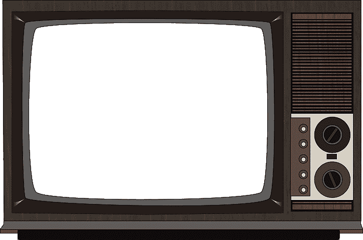
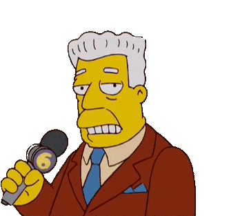
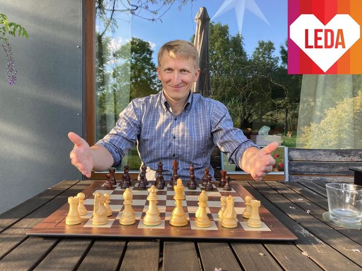
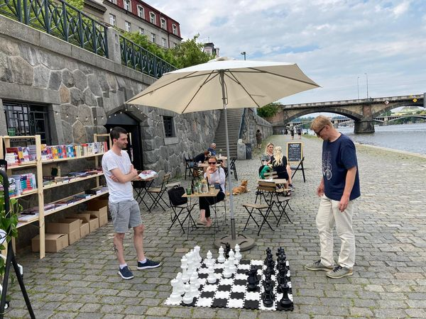
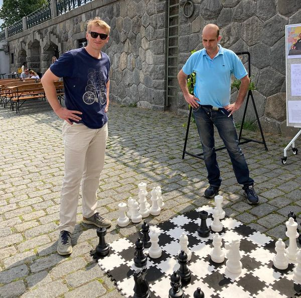
Bébul: Z dnešního turnaje si všichni odnesli aspoň bod! Neznámé-00 se podařil dát parádní Anastazia mat Baronu Gorcovi a LastScout porazil Hrobotrona sice na čas v berserku, ale ve vyhrané pozici. Oběma gratulujeme!
Bébul: BaronGorc se po porážce od Neznámé oklepal a odnesl si tři báječně tučné body, rovněž veliká gratulace!
Bébul: Margarita dlouho vedla a chybělo jen málo a v turnaji 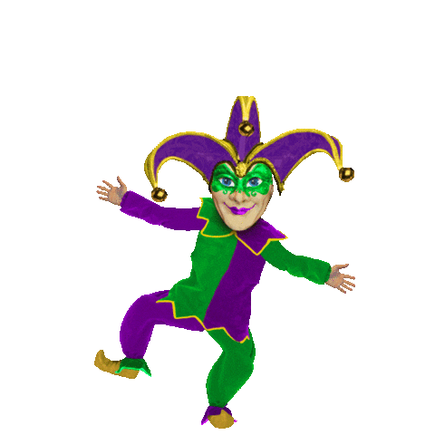 zvítězila. Nakonec se však radoval halloweenský kašpárek! Grats!
Jouzolean se tak po dvou kolech, kdy se s Mrázkem mačkali na turnajové druhé příčce od halloweenské kostřičky lehce odrazil a směje se z druhého místa. Asi nechce hrát v osmifinále s Margaritou, což chápeme. To by se bál každej! Těšíme se na další boj! 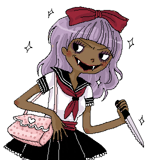
Bébul: A Jouzolean sehrál s Rychlým Lenochodem 130 tahovou vítěznou bitvu, což je druhá nejdelší hra historie Monday Fight, pričemž nejdelší vítězná.
Bébul: A že náš Bébulek dal Blackburnovskej mat, kterej už úplně zapomněl, že existuje, toho jste si určitě všichni všimli. Zatím jen Mozkomorovi a nyní Bébulkovi se to v historii Monday Fights podařilo. No, tak si třeba záviďte, nooóóóó 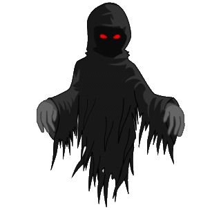
Bébul: A už jste se podívali, jaké halloweenské avatary má Arytmik, Travinho, Mrázek a Robert Cvek?
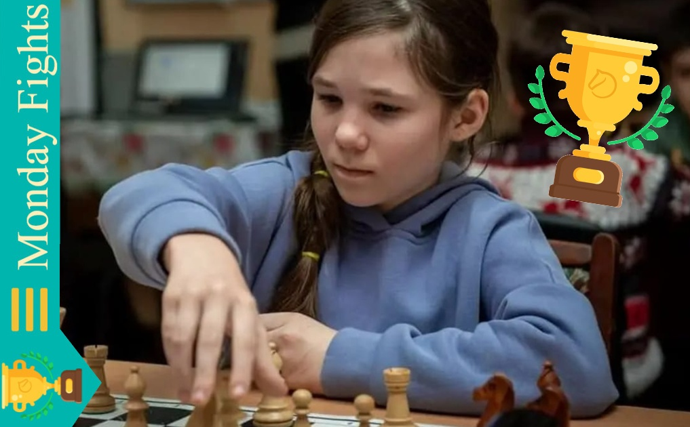
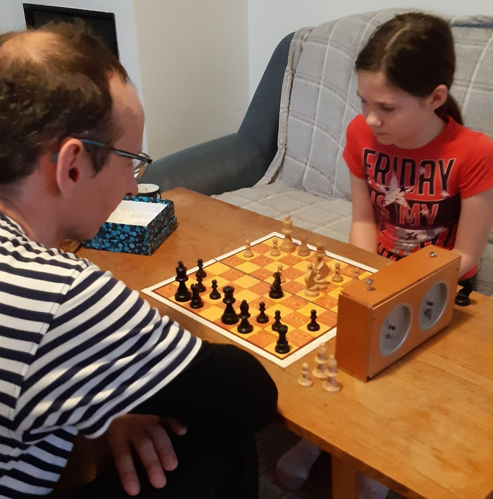
s GM Robertem Cvekem
Dnešek je pro Monday Fights svátek, neb nás poctil svou návštěvou Velmistr Robert Cvek. Byl to fofr. Nikdo z nás ho nenachytal na švestkách. Za návštěvu moc děkujeme a k vítězství gratulujeme.
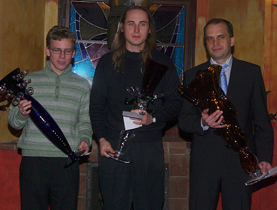
Robert Cvek jako vítěz turnaje ke 100 let Salo Flohra. I přes účast Davida Navary turnaj zcela ovládli velmistři Novoborského ŠK, zleva Viktor Láznička, Robert Cvek a Zbyněk Hráček Zřejmě dobrý oddíl.
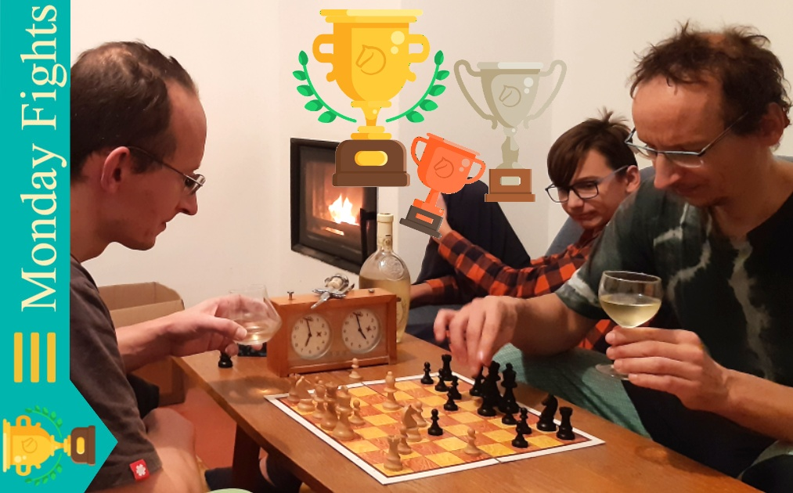
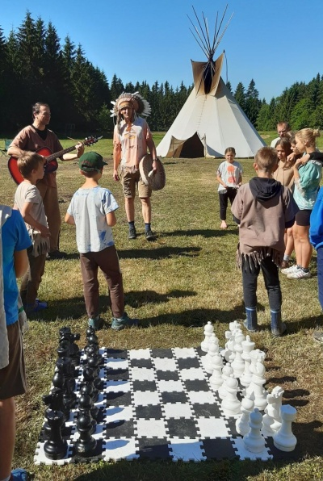
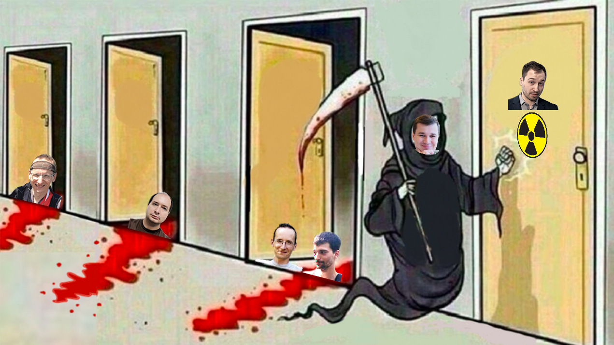
Bébul: Margarita dneska sice nejprve podlehla Jouzoleánovi, ale pak mu to hezky vrátila a nakonec získala kov nejcennější! Veliká gratulace!
Jouzolean: Jenomže teď ale vede jouzolean - a je to jeho jediná šance jak poprvé a naposledy vyhrát sezónu MF. Udělá vše pro to aby vyhrál 😁
Jouzolean: Bukowskic ještě jednou nepřijde a je ve vážných problémech! 😁 Tento rok je to hodně dramatické! Šance má i Mrazek!
Bébul: V tabulce dochází k vachrlatým posunům. Posun Jouzoleána na první místo místo Bukowskice také znamená, že se Bukowskic ocitá ve stejné osmifinálové skupině pro PlayOFF jako DJ-Strelec. Ten však může snadno párkrát na Monday Fight přijít a podle potřeby se posunout před PIRAT77 a zajistit si tak pozici ze druhé strany vyřazovacího pavouka, takže by se s Bukowskicem mohl případně potkat až ve finále!
Bébul:"Napsat báseň o Monday Fight, třebas by si všímala jen jediného hráče,
třeba by si všímala jen nejnepatrnějšího člověka,
by znamenalo sloučit všechny hrdinské zpěvy v jedinou epopej,
svrchovanou a konečnou. Monday Fight je chaos přeludů, choutek
a pokušení, je to tavící pec snů, brloh myšlenek, za něž se stydíme;
je to zmatená směsice klamných závěrů, je to bitevní pole vášní.
Pronikněte v pondělních hodinách zsinalou tváří člověka, který přemítá,
podívejte se za ni, pohleďte do té duše, podívejte se do té
temnoty. Pod zevním klidem jsou bitvy obrů jako u DJ-Pěšce, jsou
tam shluky draků a hyder a mračna přeludů jako u Bukowskice, jsou
tam vizionářské přízraky jako u Jouzoleána. Jak strašlivé je nekonečno,
které člověk nosí v sobě a podle něhož zoufale měří vůli svého
mozku a skutky svého života!" Viktor Hugo: Bídníci, kapitola Svědomí
Abych si řádně zasloužil první letošní reportérskou plaketku, ukradl jsem DJ-Pescovi během partie klíč od
CNN Prima News a s pistolí v ruce donutil štáb natočit reportáž o Monday Fights.
-beb-
Loňský Monday Fihgts PlayOFF naskladněn
Web nyní umí na základě seznamu partií odehraných v playOFF vygenerovat stránku PlayOFF turnaje a ten zobrazuje
v časové ose mezi ostatními Monday Fights turnaji. Partie odehrané v turnaji lze vyhledávat v search apod.
Pořadí v turnaji nutno brát s rezervou. Stran toho, jak počítat pořadí těch, co skončili ve stejné fázy playOFF,
došlo mezi námi k mírné rozepři. Můj původní výpočet preferoval v případě tie-breaku použití uhrané performance.
DJ-Strelec s Jouzoleánem se však přiklání k použití nasazení, tedy pořadí v ligové tabulce na konci roku.
Oboje má svou logiku. Byl jsem přehlasován.
Tato drobnost mění pořadí na třetím a čtvrtém místě
a podobně výrazně promíchává borce, kteří skončili v osmifinále, např. mě to posouvá o dvě místa nahoru a RychlyLenochod
končí až osmý, zatímco podle performance by byl na pátém místě! Připomeňmě při této příležitosti, že RychlyLenochod hned
na úvod turnaje dvakrát nabančil našemu dvojnásobnému šampionovi Bukowskicovi. Nasazen však byl až sedmý...
Klikněte si na obrázek. PlayOFF má schválně pozadí trochu do modra.
Doporučuji si turnaj otevřít a kliknout si na první řádek s Bukowskicem. Je opravdu pozoruhodné, jak vstoupil do
turnaje hned dvojnásobnou prohrou!
Během PlayOFF turnaje 2022, prosím, posílejte vždy do WhatsApp skupiny seznam odehraných partií.
Z url partie na lichess stačí vzít ten poslední identifikátor na konci. Nebo prostě zkopírujte odkazy na všechny hry,
které jste v duelu odehráli.
Podobně by bylo super, kdo jste hráli první PlayOFF 2020, kdybyste poslali takový seznam odehraných partií z roku 2020.
Díky, -beb-
17. Zlatá Praha Rapid Open 2022
Léto je již za námi, ale šachisté nelení, poctivě svá zahájení pilují a proto je potřeba ověřit teorii
v praxi. Jouzoleán i Tekele se během léta zúčastnili turnaje „Zlatá Praha Rapid Open“.
Turnaj se konal v centru Prahy na Karlínském náměstí v prostorách volnočasového zařízení
Karlínské spektrum. Zúčastnit se mohli registrovaní i neregistrovaní hráči.
Účast byla vskutku pestrá, od nezkušených amatérů jako paní Vávrová, přes Tekeleho až po GM,
jmenovitě Jírovský Miloš, FIDE ELO 2501 (aktuálně 28. nejsilnější český hráč!).
Pravidla turnaje: rapid 12 minut + 3 sekundy „inkríment“ na 7 kol švýcarským systémem.
Startovní listina
Přes veškerou neznalost profesionálního zázemí šachových turnajů musím říct, že turnaj byl skvěle organizován.
Registraci jsme provedli předem přes internet i se zaplacením a po příchodu jsme už jenom čekali na rozlosování
prvního kola. Rozpis prvního kola byl vyvěšen na více místech a tak se všichni soutěžící mohli vklidu a bez
čekání zorientovat v tabulce, najít si svůj stůl a zjistit svého soupeře.
Po krátkém úvodním slovu organizátorů jsme zasedli k vylosovanému stolu a partie prvního kola se mohly rozehrát.
Očekávání byla veliká, nervozita také. Ostře jsme se pustili do našich soupeřů od prvního kola.
Vzhledem k příhodnému losu bylo první kolo úspěšné pro oba hráče MF a odnesli jsme si zasloužený první bod!
Druhé kolo Tekelemu nalosovalo soupeře s ELEM takřka 1900, který vytasil Francouzskou obranu.
Leč znalý základů tohoto zahajení, nemohl se jinak než poroučet s prohrou a respektem k soupeři.
Jouzolean dostal ke stolu hráče s ELEM 1986. No, odešel s nepořízenou, ale hlavou vztyčenou vzhůru!
Po krátké pauze následovalo kolo třetí. Italská hra přinesla další bod pro Jouzoleana a mohl tedy zamířit
v pořadí výše. Tekele nyní zápasil při Caro Kahnu. Zuby nehty držel vyrovnaný stav,
bohužel v koncovce pohořel a poroučel se s prohrou.
Jouzolean hledá, vymýšlí...
Turnaj se přehoupnul do své druhé poloviny a byla již znát únava části zúčastněných, odhodlání ale zůstalo.
Čtvrté kolo si Tekele namazal soupeře na chleba, jak jinak než svým Sicilským drakem!
Opět velmi silný soupeř vstoupil Jouzoleanovi do jeho snah ovládnout místní zápolení.
Svou antisicilskou hrou útočil, bránil, útočil, uhýbal, klamal tělem i blafoval,
ale k bodům to bohužel nevedlo.
Na několik nejlepších stolech zápolili ti nejlepší z nejlepších.
Elektronické šachovnice umožňovaly sledoval tyhle zápasy online!
Elektronické šachovnice
Kostel sv. Cyrila a Metoděje
Turnaj pokračoval pátým kolem. Pro třetí turnajový bod si došel Tekele zavřenou sicilkou.
Nimzowitschovou hrou se snažil urvat další výhru Jouzolean, bohužel neuspěl.
Šesté kolo vyšla Jouzoleanovi Anglická hra a třetí turnajový bod byl jeho!
Tekele zvyklý dát každé pondělí dva nebo tři maty bebulovi a jít spát už mlel z posledního.
Přece jen Rapid turnaj je na soustředění dost náročný, obzvláště po noční!
Zkusil tedy sicilku proti hráči s elem 1852, ale narazil.
Před sedmým závěrečným kolem jsem už pomalu bilancovali a věřili v poslední bod.
Přes silnou účast i hráčů ze zahraničí a průměrným FIDE elem turnaje 1582 jsme byli víceméně spokojení
s průběhem. Ovšem že, když se člověk ohlédne, vidí chyby a mrzí ho ztracené body.
Nicméně jsme se nevzdávali, občerstvili se a vstoupili do posledního kola.
Tekele vypustil Sicilského draka. Lepší trailer na Hry o Trůny si diváci nemohli přát.
Útok střídal útok, soupeř byl nervózní, ošíval se, potil se. Jak už to ale v tomhle zahájení bývá,
malá nepozornost může stát hráče celou hru a tak se i stalo, kýžený čtvrtý bod nepřišel.
Jouzolean čelil za bílé Philidorovi. Utkání se vyvíjelo dobře. Soupeř byl zaskočen.
I přes dostatek času a „inkríment“ se hra dostala do složité koncovky s minimem času pro oba hráče.
V časovém presu došlo ke zmatečné situaci, najednou nikdo nevěděl, jestli se táhnulo dobře.
Velmi nervózní závěr, oba hráči se přeli a nebýt přihlížejících, došlo by na krev!
V nepřehledné pozici se nakonec oba hráči dohodli na remíze a zisku tedy alespoň ½ bodu.
Turnaj byl tedy po zhruba 6 hodinách zápolení ukončen. Vítězem turnaje s 86 účastníky se stal hráč
z Lotyšska se ziskem 6 bodů. Gratulace. Jouzolean vybojoval krásných 3,5 bodu a obsadil 44. místo.
Na 55. místě skončil Tekel se ziskem 3 bodů. Oba jsme odcházeli plní dojmů domů a spřádali plány
na další turnaje. Jistě se brzy nějakého zúčastníme! -tekele-
Nové achievementy na skladě
Web nyní detekuje hromadu nových věcí. Projděme si je popořadě:
Útok s obětí střelce na rochovaného krále umí ze všech hráčů Monday Fights pouze mozkomor a RychlyLenochod.
Na celém turnaji uspěl takový útok z aktuálních 5031 her 11x, pouze jednou na dámském křídle.
Z toho 5x vyhrál mozkomor, 4x RychlyLenochod a pak už jen jednou Jouzolean a Arytmik.
Z hráčů, kteří tomuto útoku podlehli jasně vévodí bukowskic, který tomuto útoku podlehl 6x.
Obětujte s bukim střelce na h6 a máte ho!
Při této příležitosti, bych rád zavzpomínal na naši milovanou Neznámá-00,
která v oné naprosto unikátní partii s naším věhlasným šampionem našla v prohrané pozici Arabský mat -
partie k nalezení v tomto turnaji.
U tohoto známého matu věží kontroluji, že po odstranění jezdce už mat není.
U tohoto vzácného matu musí matovat střelec a druhý střelec i jeden z jezdců být pro mat nepostradatelní!
Zahrnuje všechny maty, v nichž vítěz neztratil ani pěšce, natož figuru. Nesmí se ale jednat o ševcovský mat.
Légalův mat, neboli Námořní kadet. Dosud v jediném, mozkomorově, provedení.
Obrázek ještě ukazuje, že ikonka pro útok s obětí dámy má novou podobu.
No tak co co coóóóóóó? Už jste porazili bukowskice obětí střelce na h6? Že né? No to je škoda. Tak hurá do toho!
-beb-
Slovo k Fair Play
Nedávno jsem se jen tak mezi řečí dozvěděl, že kdysi dávno si potřeboval jeden z Monday Fighterů nutně odskočit a předal v hospodě
svou šachovnici jinému hráči, aby za něj pár tahů odtahal. Jednalo se o partii, kde se všichni tři znali a protihráči to pak hned řekli,
zasmáli se atakdál. Legrace.
Prosím Vás, né všichni hráči v tomto turnaji jsou takovýmto legráckám nakloněni a chtěl bych říci:
v žádném případě nepodvádějme! Ani když protihráč udělá brutální blunder a "zaslouží si" už prohrát!
Neberme radu od nikoho, vyžeňme i manželku, kdyby nám chtěla radit přes rameno, nebo synek varoval, že máme napadenou dámu.
Literatura: žádná šachová literatura ani vlastní výpisky Engine: během hry never ever Kámoš: nesmí ceknout ani naznačovat, nejlépe ať nesleduje! Káva: povolena v jakémkoli množství
Turnaj Monday Fight je specifický v tom, že se navzájem herně dobře známe a je možné se na soupeře připravit. V takovém případě se může stát, že
naše hra odpovídá prvních, třeba 14 tahů, hře velmistra. Zvlášť od slabších hráčů to může být velmi bolestivé, ale stává se to.
Příkladem budiž několik mých výher v Barmen defense proti Tekelovi, kde mi variantu a prvotní fígl poradil Jouzolean a já Tekelovi několikrát chytil dámu.
Manželka: "pozor, stojí ti tam pěšec!" Milenka: "bacha, tvá dáma je v ohrožení!" Dcera: "smí tvůj střelec přepadnout dámu?" Kámoš: "měl bys tu svou dámu vyměnit"
Kdysi si reportéři na chess24 dobírali tuším Giri Anishe, co říká tomu, že mohl vyhrát, kdyby zahrál jistou variantu.
Giri se krátce zamyslel, zakroutil hlavou a řekl, že měl teda velikou kliku, protože kdyby to náhodou zahrál, všichni by ho
museli podezřívat z použití enginu.
Jenže engine v přípravě používat můžeme, nenakukujeme-li do něj během vlastní hry. Jak pak takovou mistrovskou hru odlišit od podvádění?
Já svou přípravu částečně konzultuju s Jouzoleanem a mozkomorem, takže ti vědí často dopředu, co se chystá, případně - mozkomor - má k mé
přípravě přístup. Takže přípravu na případně podezřelou partii mohu prokázat. Nelze to samozřejmě vyžadovat, ale přijde mi to ideální.
Fair play nade vše!
Podobně Jouzolean mi furt a pořád bombarduje WhatsApp, když dopředu prozrazuje, co chystá na někoho z Vás.
O to má pak větší radost, když to klapne! Škoda jen, že když mi poradil údajnou tutovku na Mrázka v zahájení, které jsem nikdy předtím nehrál,
rozhodl se Mrázek hned zkraje zahrát něco jiného a přede mnou stála pozice, se kterou jsem si vůbec nevěděl rady.
Díky Vám všem, že jsou klání na Monday Fight tak zábavná a plná překvapení.
Zaplať Pán Bůh, že všichni hrajeme poctivě.
Přeji mnoho úspěchů a cenných skalpů v dalších hrách!
-beb-
Jouzoleanův dovětek
Když jsem moralizování o Fair Play napsal, přišlo mi to takový divný a dal jsem to radši posvětit na Monday Fights
velení k Jouzoleanovi a DJ-Pescovi, aby za tím stál celý triumvirát. Jouzolean pak naléhal, že ještě musím přidat strýčka Sama,
aby bylo jasný, že partie průběžně sledujeme :-)
Jak známo sám Jouzolean zná každou novinku, která se na šachovnicích v MF udála, jak si
nedávno trefně všimnul maestro Mrázek.
Tak tímto děláme za onou, doufejme zbytečnou, malou pololetní Fair Play upomínkou konečně tečku.
-jouz-&-beb-
#jouzolean #anticheatcontrol #fritz #analyzis
Šampióni dostávají zabrat
V poslední době se nám na turnaji stává takovým dobrým zvykem, že jindy neohrožení titáni, koryfejové turnaje,
dostávají zabrat od hráčů, které si dříve mazali na chleba. A k našim uším pak dolehnou slova dříve neslýchaná:
DJ-Strelec: "já si říkal, že na Mrázka to bude stačit... Navíc nedělal velkou rošádu, takže to mělo být v pohodě...
Šel nahoru... Podobně jako všichni... Je na čase si připustit, že na MFA to už nejde jen tak odtahat a v suchém triku vyhrát 😄"
A že nadpis hovoří v množném čísle. Poslechněme si, co uchu našemu lahodí ještě více:
Bukowskic: "Soustředění 0 a vyklepneš mě v berserku, což mě stálo 2. flek, bezva."
Dodejme zde, že šlo zcela jistě o tuto partii, kterou Bébul odehrál v berserku podstatně lépe, než bývá jeho standardem v normální hrací době.
To bude teprv bžunda, až někdo z vrchnosti koupí ševcovský mat!
RychlyLenochod nikdy nespí!
Táááákže, když našinec vzhlíží z hlubin ligové tabulky k mazákům svádějícím boj o první místo, pocítí při pohledu na třetí sloupec drobnou satisfakci.
Jste na čele, ale že to stálo bodíků, coóóóóóó? -beb-
Zdravím Vás, Monday fighťáci,
nová sezóna je rozjetá ve velkém stylu, na čele tabulky se to mele jako ještě nikdy, přibylo pár nových perspektivních hráčů,
Neznámá už je taky zpět, ta mimojiné přivábila i Hrobotrona, který to letos bude mít k obhajobě loňského postupu do pavouka obzvláště náročné.
No a jak vlastně bude ten letošní pavouk vypadat? Po dlouhé kmenové debatě jsme se rozhodli pravidla definovat již teď a dále je neměnit.
Postupovat do pavouka bude nově 12 hráčů. Ti budou následovně dle POŘADÍ v tabulce rozřazeni do pavouka.
Bude to podobné jako v hokeji.
První čtveřice hráčů v tabulce se automaticky kvalifikují do čtvrtfinále.
V osmifinále pak na sebe narazí hráči
5.vs 12.
6.vs 11.
7.vs 10.
8.vs 9.
Ve čtvrtfinále pak
1.vs 8./9.
2.vs 7./10
3.vs 6./11
4.vs 5./12.
Aktuální podoba pavouka bude po každém turnaji k nahlédnutí na našem webu.
Dále chystáme:
Ocenění Vašich slovutných výkonů v podobě plaketek (již brzy na webu)
Turnaj proti jiným týmům
Vábení českých velmitrů do našich řad :D
Za celý tým MF přeji mnoho šachových i nešachových úspěchů.
-jouz-
Hraješ pod psa!
...nebo nad očekávání?
V leaderboardové tabulce je k vidění sloupec R, který po vybrání dodá přehled o pohybu
ratingu každého hráče během jednotlivých turnajů. To ještě ale mnoho neříká o tom, s kým hraju
hůř než by odpovídalo ratingovému rozdílu nebo naopak lépe. Rýžuju, nebo krvácím? Hraju pod psa
nebo nad poměry? A právě toto si lze nyní prohlédnout v naší Cross Table, pokud zaškrtnete volbu pro
zobrazení Ratingu.
Důrazné varování: pokud zrovna nejste Tekele, nejspíš vám pohled na tabulku
přikreslí vrásky na čelo!
Tak kupříkladu již zmíněný stále silnější Tekele nehorázně rýžuje skoro na všech. Pohleďme na
tabulku zobrazující celé období našich slavných Monday Fight turnajů. Autor těchto řádků
na měm shodil 103 ratingových bodů, kteroužto vrásku maličko vyvažuje fakt, že maestro Mrázek
klopýtnul ještě o bod hůř. Jouzolean s Tekelem vykrvácel jen 84 bodů, je to darebák, ale kam se hrabe
na berserkující šelmu, Rychlýho Lenochoda, který Tekeleho dokonce o 16 bodíků obral!
Připomenutí: V cross tabulce nikdy nezobrazujeme noStart hry, které ovšem figurují
v leaderboardové tabulce, kde tedy můžete vidět maličko odlišná souhrnná data.
Co vzkázat panu Tekelovi do budoucích zítřků? MENE TEKEL! -beb-
Výroční zpráva páně Jouzoleána
Tak a je dobojováno! Sezóna 2021 je s dnešním turnajem definitivně odpískána. Tato již legendární skupina hráčů se dokázala scházet v menším či větším počtu
celý rok a ani jednou se nestalo, že by se nehrálo - a to ani tehdy, když jednou selhal lichess. To máme 52 kvalitních turnájů v roce. Náš seznam hráčů již čítá 26 jmen včetně jedné holky
a všichni se známe, dokonce na platformě lichess vznikl náš nový klub, na který jsme náležitě hrdí ! A JAK TO VLASTNĚ CELÉ DOPADLO?
1. Kategorie - Bukowskic - opět první, nedosažitelný, bez covidu nepřemožitelný. Letos se mu podařilo pilně nasbírat 373 bodů, což stanovujeme jako nový dosavadní rekord a zlatá plaketa bude vystavena v síni slávy. Tento rok se jen zlepšoval, přesáhl hranici 2000 elo a jeho pronásledovatelé nedokázali rozbít jeho systém výstavby Philidorovy obrany, nepochodili ani se Sicilskou obranou a dokonce ani s hrami dámským pěšcem. Tím akorát v jejich táboře vyvolal další vlnu nerovozity a odporu - my budeme bojovat dál a příští rok ti to spočítáme, mocný Bukowskici.
2. Kategorie - všichni ostatní:
Na 2.místě se umístil Jouzolean - ani on nelenivil a zvedal své elo, potrápil nejednoho mondayfightistu a obhájil své 2.místo z minulého roku. Našel konečně recept na kings gambit a možná taky na kings indian, čímž znejistil hlavně bratry mozkomory. 324,5 bodu je výsledkem nejen jeho zarputilého a ostrého stylu, ale taky hlavně díky téměř 100 % účasti. Více než 300 bodů se už nepodařilo nikomu nasbírat. Udělujeme mu tedy stříbrnou plaketu a bude vystavena v síní slávy. Tuto plaketu získá každý další hráč, který pokoří v příštích letech tuto mez.
Na 3. místě se umístil Mrázek - minulý rok byl osmý, letos zabojoval a zaslouženě bere BRONZ se ziskem 264 bodů. Jeho rozvážné, čas vyžadující tahy znervózňovaly snad každého. Tento závodně hrající player se také zlepšil, překročil hranici 1800 elo a v dalším roce bude horkým kandidátem na vítězství. Bude muset překonat svou paniku s blitze, uklidnit svého horkého ducha a pak dokáže všechno.
4. bramborový flek uhájil s velkou pohodou Bebul, který nasbíral 209 bodů. Nevíme, zda je spokojený, ale myslíme si, že ne. Jeho kvality tento rok šly nahoru, pak dolů a pak zase nahoru až na konci roku zase dolů. Hráč takové kvality ale rozhodně potřebuje kov ! Tak snad příští rok. Jeho rivalita s tekelem graduje, noví hráči jsou také kvalitní, bude to mít zase trochu těžší - ale já mu věřím - příští prosinec - 2000 elo.
5. místo bere nakonec Mozkomor, stejně jako minulý rok, tentokrát se 190 body. Všichni dobře ví, že by si taky zasloužil bednu, ale jeho tak trochu horší účast mu to kazí. Ale mu to nevadí, on se usmívá, on ví, že nás porazí jak maliny - je to skromný jinoch.
6. místo patří maestru Tekelému - svým urputným zlepšením mu náleží bronzová plaketa SKOKAN ROKU - hráč ji může získat jen jednou a bude vystavena v síni slávy. Nejprve byl na úrovni mloka - minulou sezonu devátý, těžkopádně hrající, nevýrazný hráč. Pak ale začal trénovat, zlepšovat se a dřít na sobě, až se z něj nakonec stal postrach pro celý turnaj. Elo kolem 1700, nasbíral skvělých 180,5 bodů a o píď nestačil na svého soka Mozkomora. Bojme se všichni !
7. místo bere se ziskem 130. bodů Rychlý Lenochod - tolik bodů nasbíral i přes jeho cesty po Francii a i přesto, že vůbec netrénoval. Je to prostě haluzák. Ale spoustu hráčů k němu chová tajný respekt. Jeho nepravidelná zahájení dokážou naštvat každého profíka a oběti lehkých a někdy i těžkých figur mu také nejsou cizí. Když to zkombinuje s berserkem, no potěš.
8. místo obsadil Dj-Pěšec s 96,5 body. To je absolutně nejhorší propad v dějinách Monday fights. Na tak kvalitního hráče jistě připadají přední příčky, svou hroznou účastí je až osmý. Jistě toho bude ve svém šachovém důchodu litovat. Snad bude mít více štěstí v pavouku, což je jeho poslední eso v rukávu.
9.místo je Travinhovo. První půlrok hrál jako o život a druhou půli neměl čas. Také adept na vyšší pozice, jen hrát, jen hrát. 45,5 bodu jistě není špatné. Posun o jednu pozici z loňska nelze také opominout.
Konečně poslední postupová pozice do pavouka - 10.místo, náleží Hrobotronovi, který se přes úvodní neshody s hráčí vlastních řad nakonec umoudřil, zabjoval a se ziskem 40,5 bodu se zařadil jako poslední postupující do pavouka. Připomínám, že minulý rok byl až 11-tý a nepostoupil. Takže grats Hrobotrone a užij si pavouka, doufáme že dojdeš co nejdále !
Všem děkujeme za účast, i těm nepostupujícím, mezi které patří hráči málo aktivní, nebo hráči nedávno přidaní. Věříme, že v další sezóně ukážete, co ve vás opravdu je:)
Nyní k pavouku :
Minulý rok vznikaly celkem zbytečné rozepře ohledně nasazení jednotlivých hráčů do pavouka. Tentokrát, po mohutné debatě kmenové rady jsme se konečně shodli a rozhodli takto:
První nasazený do turnaje bude Bukowskic, jakožto Bůh a vítěz minulého ročníku, pak za něj budou zařazení ostatní hráči finálové desítky a to podle PERFORMANCE (tzn. průměrné výkonostní elo z jednotlivých turnajů). Dále pak budou hráči dosazení do pavouka podle stejněho klíče jako byl minulý rok. Pravidla zůstávají stejná a jsou k dispozici k nahlédnutí v grafickém znázornění pavouka pod textem. Jednotliví hráči se mezi sebou můžou kdykoliv začít domlouvat, poté oznámí ve whats app s dostatečným předstihem datum a hodinu boje. Ostatní pak můžou zápas sledovat. Souběžně s pavoukem se pak hned další pondělí rozjíždí nová sezóna.
Tak good luck a děkujeme za přízeň. (Zde k vidětní odehrané PlayOFF.)
Za tým Monday Fights
-jouz-
Nechoďte k Tekelemu na kafe!
Do naší redakce dorazila stížnost zhrzeného kafaře Jouzoleána, jehož hořekování publikujeme v nezměněném podání...
Tekeleho šachový čurbes
"Včera jsem byl u Tekeleho na kafe - všude šachové knihy, figurky po zemi, 3 šachovnice různé po bytě, ventilátor u PC řval
jak na lesy, protože procesor zrovna počítal nějakou strašně divnou pozici z Vídeňské hry. Tekele řek jen pojd hrát,
ani to kafe mi neuvařil a odcházel jsem nasranej s výsledkem 3:3!!
A to jsem se potil a modlil abych poslední hru vyrovnal!!" -jouz-
Máme vlastní klub!
Jednoho úterního večera napsal Jouzolean "zdravím", což normálně nedělá, takže bylo jasný, že je za tím nějaký hlubší důvod.
A za tou svou zdravicí dodal "vytvořil jsem na lichess náš vlastní klub."
Takhle stručně, takhle jasně, takhle úderně to napsal.
A potom v klubu co chvíli šup! - přibyl další Monday-Fightista! A že se do seznamu vyklubyla i Neznámá-00, dá se říct, že se můžeme
těšit na světlé zítřky.
Jouzolean pak v těšení pokračoval: "Můžem si tak někdy zahrát nějaký týmový turnaj, je tam diskuzní fórum a je to cool."
Tak hurá hurá! Střezte se nás cizí klubové, my bijem o mříž, ducha lvi, a my vás rozbijeme!
-beb-
Monday Fight naříká i jásá
Když už hraju šachy čím dál hůř a sobotní počasí se zrovna nepřekonává, naprogramoval jsem aspoň jednu libůstku,
která jedněm přikreslí vrásky na čelo a posílí bolest v srdci, zatímco druhým rozpáře hubu pro smích.
Oč jde?
Tabulka pořadí v turnaji s naříkavou či jásavou změnou Ratingu
Na Monday Fight je nyní tabulka s konečným pořadím v turnaji.
Podobná tabulka je k vidění i na stránce turnaje v Lichess, ale jen u nás je u každého hráče zobrazen důvod k radosti či pláči.
Pokud jste někdo moc neklikal na ty střelce pod tabulkou, vřele doporučuji! Můžete si tak dohledat nějakou radost, pokud
máte zrovna slzy pro pláč, a nebo, pokud váš rating zrovna stoupá k nebi jako dým, nabrat pohledem na svou temnou historii též trochu pokory.
A rychlé maty vždycky potěší.
-beb-
Jag já to hraju!
Pondělní Monday Fight zastihl našeho Bébulka
v bojovné náladě. Všechny vás měl na lopatě! Ale ta lopata byla nějaká děravá, tak mu vítězství vždycky nějak
lopatou propadlo, a nejen vítězství, ale i případná remíza. Tím se náš Bébulek liší od takového Alireza Firouzji,
kterému se na turnaji Grand Swiss
daří, ale v partii se Shirovem už stál +2.75, chtělo by se říci, měl ho na lopatě, ale asi si ji půjčil od Bébulka
a vítězství mu propadlo. Naštěstí, nepodoben Bébulkovi, remízu umlátí i holejma rukama.
Firouzja měl Shirova na lopatě
Daleko tvrdší remíza ovšem potkala našeho čím dál lepšího Tekeleho, když ve své parádní partii měl bukowskice na lopatě v bagru,
ale v koncovce král, věž a střelec proti králi si nechal vzít tu věž, což se nevidí každý den.
A tak si Bébulek naordinoval studijní klid a opustil do konce týdne aspoň tu WhatsApp skupinu,
aby zacelil díry v té lopatě, na které vás všechny měl a aspoň trochu obrousil hrany své neschopnosti.
Toho bohdá nebude, aby Bébulek z boje utíkal. Podle mě za to může Neznámá-00, že nehrála. To se vůbec nedá hrát,
člověk pořád kouká, přihlásí se ještě, nebo nepřihlásí...
-beb-
Jedna známá „NEZNÁMÁ“
Píše se rok 2021, přesně 13.09. Den, kdy se v Monday Fights objevila první ženská.
Jedna holka možná s podobným humorem jako Vy. Jedna holka možná s velkými ambicemi
jako Vy.
Neznámá-00, ilustrační foto
Velké díky patří Jouzoleánovi, který ji přivedl na novou cestu. Cestu těžkou, trnitou.
Cestu ŠACHU. Díky za přijetí a promiňte mi mou troufalost za můj dnešní první POST. Říkala
jsem si, že tímto způsobem udělám první krok k našemu seznámení. Vše bylo samozřejmě
konzultováno s Jouzoleánem, takže případné námitky směřovat k němu :D.
Těším se na další pondělní setkávaní.
P.S. Na tuto hru nikdy nezapomenu! -nezn-
Jak vypadá blunder aneb chvilková zástava krevního oběhu
Na pondělním klání (6.9.) jsem se vznášel na vlně neporazitelnosti. A když si už člověk o sobě začne myslet příliš, zasáhne prst Boží.
V utkání s panem hrobotronem šlo s bílými figurkami vše hladce podle plánu, časem jsem si vypracoval pohodlnou převahu v podobě jedné věže a vše směřovalo k hladké výhře v průběhu několika tahů.
Poslední tah směřující k MATU!? Hodiny běží dál, jak je to možné? Oči těkají po šachovnici a já si pomalu začínám uvědomovat, co se stalo. Krevní oběh se zastavuje…
Pan hrobotron váhá, také evidentně netuší, proč hodiny nestojí a hra nekončí. Nakonec dělá ten jediný možný tah v partii. Tohle nemůžu vzdát, i když bych si hned prohrát zasloužil. Začíná marná snaha vyprovokovat hrobotrona k chybě a napadnout mu věží krále i dámu současně. Začíná hra kočky s myší. Postupně likviduji pěšcovou převahu, ale v tuto chvíli mě může hrobotron už jasně dobít prostou proměnou pěšce h na dámu:
Z nedostatku času však volí pouze uhybný manévr dámou na c4+ a situace se motá až k samotnému závěru, kdy partii zázračně zremizujeme. Poučení jsou dvě:
I když máš obrovskou převahu, partii vyhráváš až ve chvíli, kdy se ti zastaví hodiny
Bojovat musíš až do posledního pěcha 😊
-buk-
Jak chutná výhra nad šampionem
Já bych chtěl nenápadně upozornit na to, ne že bych se nějak chvástal, ale že dnes bukowskic byl právě jednou poražen, jedním hráčem,
kterého nebudu jmenovat, aby to nevypadalo moc nabubřele. Taková výhra pak dokáže přebít i zklamání z vyhraných partií nedotáhnutých kvůli času či již
tradičně prohraných remízových koncovek 🙂 nehledě pak na vyloženě jedovatý zármutek z čistě prohraných partií...
to všechno ta jedna výhra dokáže přebít, takovou kouzelnou moc má jedna jediná výhra s bukowskicem. Doporučuju fšem co nejdříve vyzkoušet. Stojí to za to 🙂
-mraz-
Horká odveta v Barmen Defense
Dnešní turnaj je specifický výzvou mezi hráči Bebul a Tekele. Chvástali se převelice v našem chatu,
jací jsou to odborníci na Sicilian defence. Vsadili se, že kdo prohraje dnešní duel v alapinovi,
napíše další článek do MF. Jsem opravdu velmi zvědav, jak to dopadne.
Využiji této příležitosti a pokusím se jejich hru okomentovat a zanechat TU tak alespoň nějaký výukový materiál.
Bebule ani nevíš, jak se těším na dalšího alapina.
Dostaneš takovou čočku, že začneš hrát piškvorky 😁
Cenění zubů páně Tekeleho, 10.8 na WhatsApp
Tekele urputně trénoval, aby slovutného Bébula porazil a znemožnil, odborně konzultoval s Jouzoleánem
scénář možného vývoje partie, byl varován a důrazně poučen o nástrahách a úskalích tohoto zahájení.
Bébulova příprava je nejasná. Pojďme se tedy podívat, jak partie dopadly. Nakonec se odehrály dvě.
Okomentuji hry jen do fáze, kdy bylo rozhodnuto. -jouz-
Čtyři bytelný kola,...
Na druhém srpnovém turnaji hráli Bébul s Bukowskicem hezky od ohýnku, Bébulovy umaštěné prsty po displeji klouzaly,
nebo se naopak ne a ne odlepit, a tak není divu, že s Jouzoelenem padnul na čas i v naprosto vyhrané pozici.
Bébulek a Bukowskic
Nevím, jak to mají ostatní, ale Bébulkův WhatsApp se občas natěšeně rozbliká, poctěn nějakou Jouzoleanovou šachuchtivou notickou,
typu "Bébule, znáš tuhle léčku v Alapinovi?". Nedávno si Bébulek na tuhle léčku vzpomněl a Jouzoelan ji mezitím zapomněl,
ale když došlo na lámání chleba, vzpomněl si a o dámu nepřišel. Táááákže pech hroznej, áááále, poslední turnaj si Bébulek spravil chuť, a to tak, že pořádně, víte?
Při pohledu na partie odehrané na tomto turnaji si pozorný čtenář všimne, že první čtyři nejkratší partie, z nichž tři skončily matem,
vyhrál všechny náš Bébulek.
A to ve čtyřech různých zahájeních! Víte? Ta jeho variabilita! Ta jeho připravenost! Ta jeho nekompromisnost! Ta jeho nezlomná touha všechny porazit!
Nezbývá nám, než mu pogratulovat, mohutnými zdravicemi našimi.
Jináč to teď Bukowskic trochu fláká, zdá se mi, tááákže se na něj slovutný Jouzolean mohutnými kroky svými dotahuje a co nevidět
se můžeme těšit na změnu na špici. To je něco jako přešroubovat na vánočním stromečku Vánoční hvězdu na, já nevím, turbo nebo defibrilátor.
-beb-
Tekeleho aprílové ohlédnutí za Monday Fight
Opět se nám sešel týden s týdnem a všichni amatéři i zapálení hráči bušící své strategie do 40. tahu, fanoušci offline soubojů trpící
alergií na vitamin D, divácí prahnoucí po nevyzpytatelných soubojích černých s bílými (ultrakorektní zde nepochodí), fotbaloví aj. hooligans,
již si pravidelné pražské derby dvou S vynahrazují při nynější covidové sezóně sázením na průběh a hlavně výsledky turnaje Monday Fight,
ale i nasrané manželky, zvědavé přítelkyně i zpruzelí kolegové v práci, se konečně dočkali.
Poslední dubnový turnaj proběhl v hojné účasti, celkový počet 11 zúčastněných hráčů nám může závidět ledajaký okresní šachový klub.
Ten ve Valašských Kloboukách určitě. A rozhodně tam nemají tak šílené plejery. Respektive kdyby je měli, hrají s námi Monday Fight,
to dá rozum. Však proto je Jouzoleán v Praze. Něco jako naší hokejisti. Kdo umí, hraje NHL, zbytek se nechá přeblafnout Jágrem v II. Lize.
Při psaní těchto řádků si říkám, zda-li zmiňovat Bukowskice. Aktuální sezóna se nám přetáčí do druhé třetiny a nezdá se, že by zrovna on měl
zpomalovat ve sbírání bodů. Pomineme-li jednu neúčast, bere vždy nejhůře třetí místo. Což o to, rozhodují body. Těch má 144,5 a bude jistojistě
vstupovat do závěrečného turnaje z prvního místa. Zbytek sezóny zřejmě rozhodne jeho případná účast na šachovém soustředění v Bangladéši,
kam je srdečně zván a hráči Monday Fight se skládají na letenku. Btw půl roku bez internetu a pitné vody bude muset nějak vydržet.
Při téhle příležitosti nelze nezmínit pondělní senzační porážku Bukowskice s Rychlým Lenochodem, který se právě z onoho soustředění vrátil.
I když, při Ruské hře bych tipoval spíše účast na turnaji v KLDR, ale to se musí vyjádřit Rychlý Lenochod.
Při pondělním turnaji doplnil Bukowskice na pomyslném piedestalu Bebul. Hráč, jehož výsledky chronicky sráží špatné losování turnaje,
připravení soupeři, ignor přímo z vedení Lichess.org či globální oteplování, se nyní blýsknul druhým místem! Přes dvojitou porážku
s Bukowskicem za černé si s přehledem došel pro druhé místo.
Třetí dekorovaný Mozkomor se 17 body jistil třetí místo. Spousta ztracených her s papírově slabšími hráči ho stálo spoustu bodů.
Uvidíme, jak se to promítne v závěru sezóny. Aktuálně drží Mozkomor páté místo. Řekl bych TOP 5, ale v závěsu se nachází DJ-Pěšec
hřešící na své neúčasti. Vzdává už tuhle sezónu? Nemyslím si, naposledy postoval fotky z Ulambátáru.
Zřejmě nějaké soustředění, uvidíme, jak se promítne ve zbytku sezóny.
Závěrem bych rád přednesl nějaká pozitiva pro ostatní nezmíněné hráče. Znáte termín „Železná Sparta“? Jestli také tápete, uklidním vás.
Už to nic neznamená. Něco jako ICQ. Pouze nostalgie. Proč to zmiňuju? V následující tabulce uvidíte progres za poslední rok, zdroj Lichess.org.
April 2020
April 2021
Bukowskic
1950
2020
Jouzoleán
1700
1750
Mrázek
1500
1650
Bébul
1650
1700
Mozkomor
1650
1650
Tekele
800
1350
DJ-Pěšec
1850
2050
Travinho
1100
1350
Arytmik
1300
1350
Rychlý Lenochod
1350
1430
Pointu v tabule ať si hledá každý sám. Přeji Všem štastné tahy do dalšího turnaje!
-tekele-
Horké aktuality Monday fights
Disclaimer: Provozovatel tohoto webu nenese žádnou odpovědnost za správnost informací obsažených v následujícím článku napsaném horkým perem páně Jouzoleána. :-D
Rychlý Lenochod před časem oznámil, že se do května nemůže účastnit Monday fights (dále jen MF) kvůli nové práci. Sdělil také, že bude ale pilně trénovat a od května nám začnou těžké časy. Co ale nečekal bylo, že když už lenochod nejde na MF, přijde MF za lenochodem v podobě Bullet Wednesday fight a přistihne ho opět nepřipraveného. Se ziskem pouhých 12 bodů se zařadil na před-předposlední místo a potvrdil tak svoji mizernou formu. Vzkaz pro něj - před námi neutečeš hochu - ani když jsi z Brna :D
Když zabrousíme do minulosti, vzpomínám si také, jak onehdy
Mrázek přišel s tím, že dosáhl 1700 ELO, a že začíná být spokojen se svou hrou.
Inu, hned následující dny, jako když utne, začal padat až se propadl do hluboké recese.
Navíc v posledních MF podává velmi znepokojující výsledky.
Po svižném startu sezony rychle vyčerpal štěstí začátečníka a podlehl tlaku silnějších hráčů tohoto proslulého celoročního turnaje.
Další zprávy o vývoji jeho potenciálu jsme od něj již neobdrželi, párkrát byl snad spatřen, jak nadává ostatním hráčům na chatu turnaje a vymlouvá se nepřízeň času a osudu.
Mrázku, vzkaz pro tebe – sledování Výměny manželek má vliv na tvé ELO - dej si na to pozor! :D
Kolísání formy hráčů Mrázek a Tekele
Zcela naopak si vede Tekele- jeho Londýnský systém a
hyper akcelerovaný drak
začíná dělat problém stále více hráčům. Před nedávnem postoupil z úrovně mloka na úroveň
Jiřiny Bohdalové
a míří stále výš. Taky porazil Mozkomora, Bebula a dokonce i Buka a DJ Pěšce. Rád bych vypíchl jeho rivalitu s Travinhem, kterého postupně předběhl. Uvidíme, co s tím Travinho udělá, každopádně dle jeho aktivity na lichess a taky díky postupnému zlepšování to bude ještě zajímavý souboj.
Svou premiéru si zažil Arytmik – v prvním turnaji se rozehřál a v druhém již atakoval cenné kovy. Se 4. místem musí být řádně spokojen,
přesto když jsem ho potkal, říkal že chtěl víc. :D Úvodní blafák – dneska dám max 1 až 2 hry se ukázal jako účinný a zcela oslepil soupeře. Uvidíme další pondělky, jestli to nebylo také štěstí začátečníka jako u kolegy Mrázka, ústředna.
Bébul opět nezklamal – ukázka jeho příspěvků do chatu při bullet fight :D
Závěrem dnešních aktualit bych shrnul citátem. Nechal jsem se inspirovat webem lichess, zde ho máte po úpravě:
-jouz-
Porážkou Bukowskice Tekele rozhodl o vítězi turnaje
V závěrečné hře šlo bukowskicovi o hodně - vítězství by pro něj znamenalo stejný bodový zisk, jako měl DJ-Strelec,
ale protože by s Tekelem vyhrál a nikoli prohrál, nebyla by jeho turnajová performance zruinována a nejspíše by usedl na turnajový trůn.
Je to jedna z posledních partií turnaje, takže hráči již byli notně unaveni a o blundery zde nebyla nouze.
To jim ovšem rádi promineme, neboť mnoho pozic, které nám svou hrou připravili, vyhodnotily algoritmy lichess jako puzzle, což není zas tak běžná věc.
Většina partií, které hrajeme, totiž žádné vynucené, jednoznačné, taktické kombinace neobsahují.
A jiné, jako třeba partie Tekele - Bukowskic, jsou v tomto směru hotové pokladnice.
-beb-
Monday Fight se ženckou
Jak známo, v Monday Fight turnajích nám zoufale chybí ženy. Bébulek kvůli tomu tuze smutní, lká a naříká, až jeho pláč dosáhl ucha Nejvyššího, jeho stín
jej zastínil a hle, objevila se žencká!
Zahrajte si! A až Beth porazíte, pošlete screenshot matové pozice do naší WhatsApp. Její krásná okatá hlavička běží jen na 1024 znacích,
což by nikomu z nás, ostřílených turnajových mazáků, nemělo činit problémy.
Možná by se mohl jeden hráč obětovat, vytvořit profil MondayFightBeth a hrát příští turnaj za ni, tj. všechny tahy dělat na této šachovnici.
To by mě vážně zajímalo, jak by si tato Beth vedla. Realizovatelné to však není, neboť Beth, jak se
ve slušné společnosti sluší a patří, dovoluje pěšce proměnit pouze v dámu!
- beb-
Tvrdý předturnajový tréning
RychlyLenochod : Tekele
Tak takhle to vypadá, když pánové trénují, na Bébulka si žuby brouší a ten pak na MondayFight potí krev.
Nenechte se, prosím, zmást těmi třemi dnešními (1.března) debakly. V první partii měl Tekele Bébula na lopatě už po pátém tahu +2.8.
V Sicilské obraně vedl černý Tekele po 10.tahu -4.2, ve 13.tahu prohrával +6.0,
aby pak ve 14. a 15. tahu sebral Bébulovi obě věže a vedl -11.0.
Má se za to, že ani jeden z aktérů zřejmě neměl tuto partii pod kontrolou a figurky si dělaly co chtěly!
Ve třetí partii vedl v zahájení +1.6.
To, že nakonec všechny tři partie prohrál, je toliko důsledkem toho, že Bébulka od dob, kdy do arény vstoupil maestro Mrázek,
provází neuvěřitelné štěstí. O čemž se vlastně vedou spory. Někdo má za to, že Bébulek má neuvěřitelné štěstí, jiní zas, že
Mrázek a Tekele mají neuvěřitelnou smůlu. Ať tak či onak, tiše, pánové! Abyste Bébulkovi to či ono nevyplašili!
Nezbývá, než pánům oplatit stejnou mincí a dát taky ňákej trenýrek!
- beb-
Opět stoprocentní Bukowskic!
Po covidovém výpadku jsme se všichni těšili na pomalý nástup loňského šampijóna bukowskice.
Bébul se těšil, mozkomor se těšil a Jouzolean se tuze těšil, že si zase zahuláká svoje "yeeeees::::!!!", neb se mu jistě podaří bukowskičův
skalp znovu ukořistit.
Proslýchá se, že Tekele si počítal, o kolik se mu za případné remízy a paty zvedne ELO, Bébul zas, o kolik se zvedne ELO jemu, když porazí všechny ostatní, kterým
se zvedne ELO a všichni měli dobrou, bojovnou náladu.
bukowskic : Zbytek světa 11-0
Fyzikální zákony si ale daly šlofíka, když rychlost návratu bukowskicovy formy přejmenovala světlo na šneka
a šampion si z posledního únorového MondayFight odnesl skalpy všech účastníků.
Nezbývá, než mu pogratulovat!
-beb-
Sars 2 – Covid 19 narušil Bukimu šachové vedení
V pondělí 8.2.2021 bylo na Monday fights zase rušno. Tento sychravý zimní večer přinesl mnoho zajímavého. BEBUL odcestoval na hory a bylo to znát.
Jeho internet měl konečně signál a tak odehrál konečně 11 partií a skončil na krásném druhém místě.
Tekele-Bebul: 1-0
Travinho-Bukowskic: 1/2-1/2
Neměl tedy důvod si stěžovat a taky to neudělal,
čemuž se divíme a zároveň mu za to tleskáme.
Přejeme mu mnoho dalších úspěchů a pevné nervy v dalších kláních. Sice prohrál s Tekelem,
ale zato porazil Bukiho, mrázka v královském gambitu (zase) a dokonce svého odvěkého rivala mozkomora ve dvou bratrovražedných utkáních.
Horský vzduch mu svědčí! Nebo ne?!
BUKOWSKIC dostal COVID! Podepsalo se to na jeho dnešním výkonu. Ze 14 ti partíí vyhrál pouze 7 a s performance 1576 se zařadil na třetí místo.
Tímto přejeme Bukimu brzké uzdravení a zároveň děkujeme, že se toho nebál a přišel rozdávat body. Zase bude nejspíš zvedat ruce k obloze
a hlasitě křičet o lenosti a vznešenosti šachu. Na ukázku krásná remíza, kterou vybojoval Travinho.
Bukowski zde hraje za černé a udělá poslední tah partie.
Další aktuality
Turnaj ovládl JOUZOLEAN, který má formu jako hrom!!! Text píše on, tak nebude machrovat.
Performance 1933 si vystaví doma na poličku a bude si myslet, že je to jeho ELO.
MRÁZEK dnes na bednu nedosáhl, možná proto, že neumí hrát královský gambit.
TEKELE potvrdil svou extratřídu a uhrál jeho maximum – 4,5 bodu.
Z MOZKOMORA šel strach jako vždycky. Po dlouhé odmlce se dnes přidal DZIN69 a uhrál 3 body-vítej zpět.
DJ PĚŠEC se dnes bál a nepřišel. ARYTMIK stále hlásí technické problémy a TRAVINHO dnes
neměl den – jeho královský gambit proti všemu dnes opět nenašel uplatnění.
-jouz-
Monday Fight sestřelil Lichess
Prvního února 2021 došlo během Monday Fight turnaje k sestřelení Lichess serveru.
Američtí vědci z Princetonské univerzity zjistili, že Lichess sestřelil divoký paket obsahující vidličku jezdcem Ne3+ na krále a věž.
Paket byl nade vší pochybnost odeslán z Mrázkovy šachovnice a měl tvrdě poškodit Bébulovo ego. Další okolnosti zavinění se vyšetřují.
Kromě Bebul-Mrázek, hráli ještě Jouzolean-DJ-Strelec a RychlyLenochod-Bukowskic. V obou případech
bylo vítězství přiřčeno silnějším hráčům, ačkoli pozice to byla vyrovnaná. Všechny tyto partie lichess označil jako noStart.
Hrála se však ještě jedna partie a tuto vyhlašujeme jako partii dne: tekele-hrobotron. Černého zde před matem zachránil právě
jen pád serveru. Hrobotron pak v diskusi trval na připsání vítězství výbornému tekelovi. Dějiny přepsat nedokážeme, tak alespoň
zde, v našich aktualitách, píšeme tekeleho po zásluze tučně, jako vítěze. Ano, stalo se tak v nechvalně pověstném třináctém tahu.
Partii si můžete přehrát kliknutím na obrázek.
-beb-
Řady Královských gambiterů houstnou
A nejen, že houstnou, královskému gambitu se i nečekaně daří. Gratulujeme novému gambiterovi Travinhovi k ukořistěnému sedmitahovému skalpu.
Překvapivý průběh úvodního turnaje
Takto vypadadá tabulka aktuální sezóny po prvním turnaji. Výkony borců ponecháváme bez komentáře. Za povšimnutí stojí, že barvičky Zlato, Stříbro a Bronz z turnaje neodpovídají pořadí, neboť pořadí pro rok 2021 se nepočítá ani ze score, ani z Jouzacoins, které zanikly, ale z uhraných turnajových bodů, Points, tak, jak je na turnajích zvykem. Pokud se to neosvědčí, lze to kdykoli změnit.
Bukowskic potvrdil svou extratřídu
Gratulujeme šampiónovi Bukowskic k vítězství v superturnaji šampionů a slibujeme, že příště mu vášnivou noc nedopřejeme tak snadno ;-).
Jouzolean for president!
Zdravím šachisti..
Včera byl náš poslední turnaj v roce tak je na místě zúčtování a rozjetí nové sezóny 2021. Celkové výsledky, za které vděčíme bebulovi,
budou v nejbližší době připíchnuty do skupiny včetně zajímavých statistik, které má v plánu i dále rozšiřovat.
V plánu je např. tabulka nejčastějích zahajení, tabulka skóre vzájemných zápasů, výkonostní křivky jednotlivých hráčů a jiné ... (další nápady samozřejmě vítány).
Na prvním místě se umístil výborný Ponziani Bukowskic, který drásá nervy celý rok snad všem hráčům. Jeho laxní zahájení,
po kterém snad vždy stojíte lépe, přichází precizní střední hra a jeho typická pešcová koncovka vám vžene slzy do tváře
a prostě prohrajete. Zaslouženě první.
Na druhém místě se umístil Jouzoleán, snad diky 100 % účasti. Rozdavač dam a ostatního materiálu, carrokanista tělem i duší.
Konečně třetí místo po tuhém boji na konci roku vybojoval Bebul, věčný stěžovatel systému, nešťastná oběť aplikace lichess a skvělý hráč,
který proslul svými počítačovými tahy v královském gambitu a nekonečnými bratrovražednými zápasy s mozkomorem. Gratuluji!!!
Další sezona začne hned příští pondělí. Novinkou bude zrušení jouzacoins, do tabulky tak bude započítáváno pouze skóre, které nahrajete na turnaji. Hodnocení zůstane za celý rok a také za poslednich 10 turnajů. Jako zpestření jsme na závěr vymysleli zkušebně turnaj šampionů (play off) - účastnit by se ho mělo 10 nejlepších hráčů této sezóny. Turnaj by probíhal v lednu nezávisle na nové sezóně, systémem pavouka (viz pod textem včetně pravidel) , který sestavil DJ-Strelec na základě výsledků hráčů za rok 2020. Turnaj bude dobrovolný, kdo nebude chtít hrát, jednoduše jeho umístění zastoupí náhradník z nižších pozic či jeho zapas bude kontumován. Je jen na hračích, kdy se spolu domluvi zahrát. Mělo by to být super!
Timto děkuji všem za účast, jistě jste se všichni posunuli výkonnostně nahoru a ja mam radost, že se nase skupina neustále rozrůstá. Krásný zbytek roku a plno výher v další sezóně!!
Jouza 29.12.2020
Bukowskičův povzdech
»Minulý týden jsem zaklapl předčasně počítač a šel jsem v tričku pod širé nebe.
Tam jsem zvedl ruce k obloze a hlasitě křičel “Ten, kdo je líný přemýšlet si nezasluhuje hrát
tak vznešenou hru, jako jsou šachy”....tak dnes nevím 🤔«
bukowskic 14.12.2020


 na turnajové druhé příčce od halloweenské kostřičky lehce odrazil a směje se z druhého místa. Asi nechce hrát v osmifinále s Margaritou, což chápeme. To by se bál každej! Těšíme se na další boj! 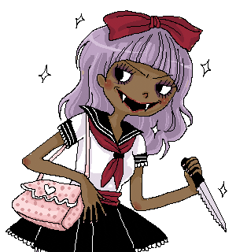
na turnajové druhé příčce od halloweenské kostřičky lehce odrazil a směje se z druhého místa. Asi nechce hrát v osmifinále s Margaritou, což chápeme. To by se bál každej! Těšíme se na další boj! 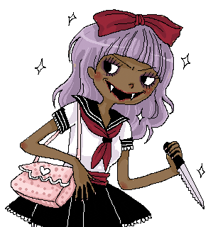